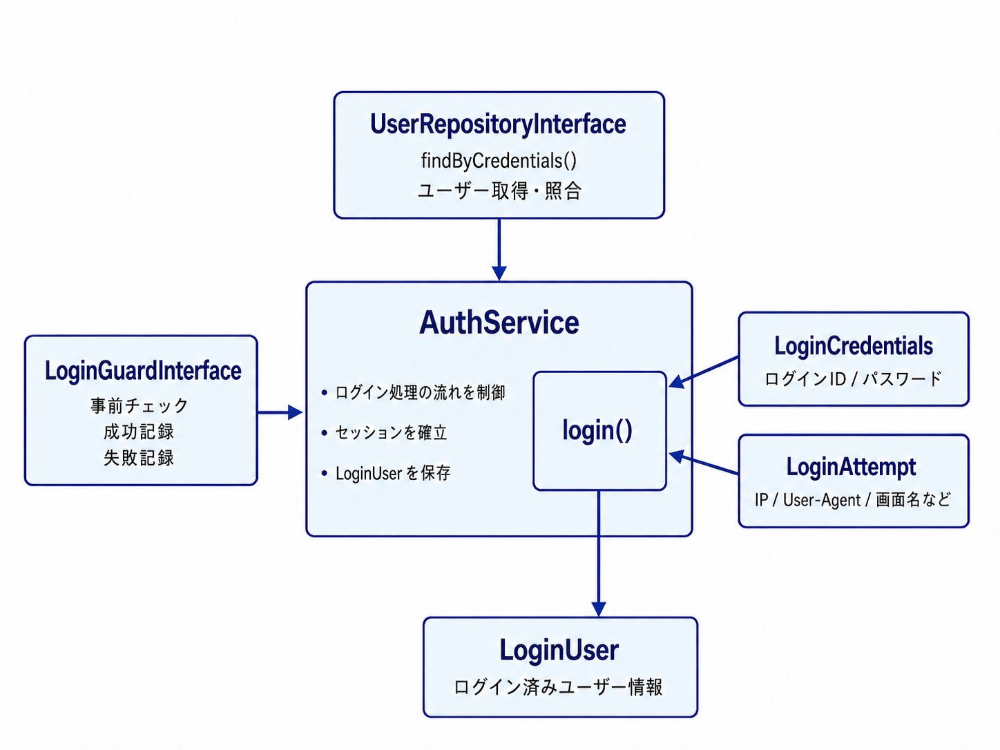
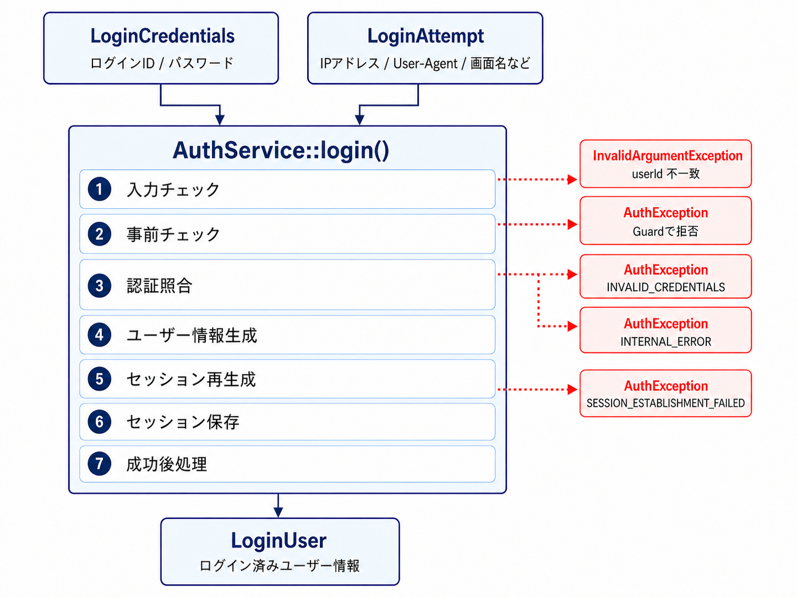
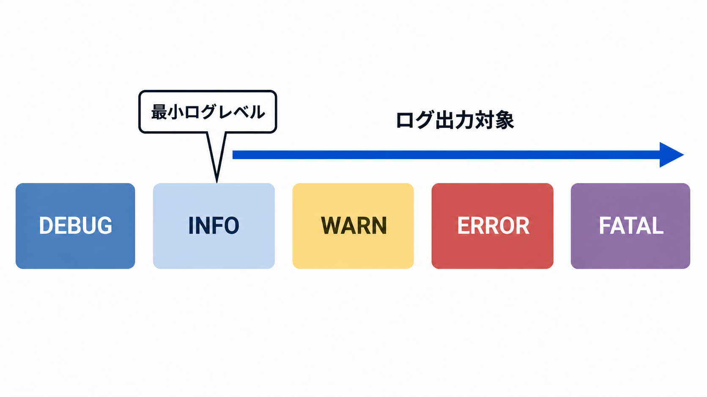

リファレンス
Chandra の各機能、クラス、メソッドの使い方を確認するためのリファレンスです。
はじめに
Chandra は、PHP 業務アプリで繰り返し必要になる「認証」、「DB 操作」、「セッション」、「CSRF」、「Cookie」、「ログ出力」といった基盤機能を、使いやすいサイズのライブラリとして提供しています。
フルスタックなフレームワークで想像されるようなリッチな機能ではなく、必要な機能を絞ることで、アプリケーション側が、自由度高く組み込めることを優先しています。
このリファレンスは、クイックスタートとハンズオンを読み終えたあとに、「いま使っているクラスの責務は何か」「どのメソッドを、どの前提で呼ぶのか」をすぐ引けるようにすることを目的にします。
現在、v0.2.0 を公開しています。
基本構成と前提
Chandra の主な機能
Chandra は以下の機能を備えています。
- Auth: 認証フロー、ログイン試行情報、ログイン済みユーザー、Guard 契約
- Database: PDO ベースの DB 接続と CRUD 補助
- Support: Session、CSRF、Cookie、出力エスケープ、入力補助
- Logging: ファイル出力ロガー
- Config: DB / Mail 設定読込、定数
アプリケーションはこれらを使用して、実際のテーブル構造や認可ルール、ログイン制限のロジックを作成することになります。
動作前提
- PHP 8.2 以上
- MySQL 8.0 以上
- Apache 2.4 以上
- Composer 2.6 系以上
Chandra を使用する場合の必須事項
CookieHelperを使う場合: OpenSSL- 画像系 Utility を使う場合: GD
MailConfigを使う場合: SMTP 設定
設計上の前提
AuthServiceやSessionHelperはセッションを利用しますが、session_start()を自動では呼びません- 認証本体は
UserRepositoryInterfaceの実装へ委譲されます - ログイン試行制限やアカウントロックといった、認証に関わるロジックは アプリ側で実装します
- 2FA、ルーティング、DI コンテナは標準では提供しません
設定 / Config
Chandra で DB 接続を利用する場合は、DB 接続情報の設定が必要です。
また、メール送信を行うアプリでは、MailConfig クラスを使って SMTP 設定を読み込めます。
どちらも、設定値を ini ファイルから読む方法 と、環境変数から読む方法 が用意されています。
fromIni() メソッドは、接続先やユーザー名などを、dbconfig.ini や mailconfig.ini のような設定ファイルに記述して読み込む方法です。
ローカル開発では内容を確認しやすく、サンプル設定も用意しやすいため、扱いやすい方法です。
ただし、パスワードなどを含む実際の設定ファイルは、誤って Git 管理に含めないよう注意が必要です。
fromEnv() メソッドは、同じ設定値を環境変数から読み込む方法です。
本番環境では、アプリケーションのコードや設定ファイルにパスワードを書かず、サーバー側から環境変数として渡せるため、アプリケーションの配備物と機密情報を分けやすくなります。
fromIni() と fromEnv() をアプリ側で直接呼び分けることもできますが、fromConfiguredSource() を使うと、環境変数の値によって読み込み方法を切り替えられます。
DB 設定では CHANDRA_DB_SOURCE、メール設定では CHANDRA_MAIL_SOURCE が、既定の切り替え用環境変数として使われます。
| 設定値 | 読み込み方法 |
|---|---|
| ini | ini ファイルから読み込む |
| env | 環境変数から読み込む |
| 未設定 | default_source の指定に従う。default_source も省略した場合は ini |
これにより、ローカル環境では ini ファイルを使い、本番環境では環境変数を使う、といった切り替えを、アプリ側のコードを変更せずに行えます。
| 対象 | クラス | 利用メソッド |
|---|---|---|
| DB 接続 | PdoConnection | fromIni() / fromEnv() / fromConfiguredSource() |
| メール設定 | MailConfig | fromIni() / fromEnv() / fromConfiguredSource() |
DB 設定
fromConfiguredSource
PdoConnection::fromConfiguredSource() は、CHANDRA_DB_SOURCE の値に応じて、fromIni() または fromEnv() を呼び分けます。
$connection = PdoConnection::fromIni(__DIR__ . '/config/dbconfig.ini');
$connection = PdoConnection::fromConfiguredSource(
__DIR__ . '/config/dbconfig.ini',
[
'default_source' => 'ini',
'switch_env_name' => 'CHANDRA_DB_SOURCE',
]
);
default_source は、切り替え用の環境変数が設定されていない場合に使う読み込み方法です。
switch_env_name は、切り替えに使用する環境変数名です。
省略した場合は CHANDRA_DB_SOURCE が使われます。
そのため、既定の設定を使う場合は次のように短く書けます。
$connection = PdoConnection::fromConfiguredSource(
__DIR__ . '/config/dbconfig.ini'
);
ini ファイルを使う場合は、CHANDRA_DB_SOURCE を設定しないか、明示的に ini を指定します。
SetEnv CHANDRA_DB_SOURCE ini
環境変数から DB 接続情報を読む場合は、env を指定します。
SetEnv CHANDRA_DB_SOURCE env
env を選択した場合も、アプリ側では同じ fromConfiguredSource() の呼び出しを使用します。 この場合、第1引数の ini ファイルは読み込まれません。
fromIni
fromIni() は、ini ファイルから DB 接続情報を読み込みます。
次のうち、dbhost、dbname、dbuser、dbpass は必須です。
dbport と charset は省略できます。
dbhost=127.0.0.1
dbname=myapp
dbuser=myuser
dbpass=secret
dbport=3306
charset=utf8mb4
直接呼び出す場合は、次のように記述します。
$connection = PdoConnection::fromIni(
__DIR__ . '/config/dbconfig.ini'
);
charset を省略した場合は、Chandra v0.2.0 の PdoConnection が持つ既定値 utf8 が使われます。
fromEnv
fromEnv() は、DB 接続情報を環境変数から読み込みます。
Chandra v0.2.0 の PdoConnection は、既定で次の環境変数名を使用します。
DB_HOST=127.0.0.1
DB_PORT=3306
DB_NAME=myapp
DB_USER=myuser
DB_PASS=secret
DB_CHARSET=utf8mb4
DB_HOST、DB_NAME、DB_USER、DB_PASS は必須です。
DB_PORT と DB_CHARSET は省略できます。
DB_CHARSET を省略した場合は、PdoConnection の既定値 utf8 が使われます。
PHP から直接 fromEnv() を呼び出す場合は、次のように記述します。
$connection = PdoConnection::fromEnv();
$pdo = $connection->getPdo();
Apache の SetEnv を使って設定する場合は、次のようになります。
SetEnv CHANDRA_DB_SOURCE env
SetEnv DB_HOST 127.0.0.1
SetEnv DB_PORT 3306
SetEnv DB_NAME myapp
SetEnv DB_USER myuser
SetEnv DB_PASS secret
SetEnv DB_CHARSET utf8mb4
環境変数名をアプリ側の命名に合わせたい場合は、fromEnv() に対応表を渡せます。
$connection = PdoConnection::fromEnv([
'dbhost' => 'MYAPP_DB_HOST',
'dbport' => 'MYAPP_DB_PORT',
'dbname' => 'MYAPP_DB_NAME',
'dbuser' => 'MYAPP_DB_USER',
'dbpass' => 'MYAPP_DB_PASS',
'charset' => 'MYAPP_DB_CHARSET',
]);
fromConfiguredSource() から利用する場合は、env_map オプションに同じ対応表を指定します。
$connection = PdoConnection::fromConfiguredSource(
__DIR__ . '/config/dbconfig.ini',
[
'default_source' => 'ini',
'switch_env_name' => 'CHANDRA_DB_SOURCE',
'env_map' => [
'dbhost' => 'MYAPP_DB_HOST',
'dbport' => 'MYAPP_DB_PORT',
'dbname' => 'MYAPP_DB_NAME',
'dbuser' => 'MYAPP_DB_USER',
'dbpass' => 'MYAPP_DB_PASS',
'charset' => 'MYAPP_DB_CHARSET',
],
]
);
メール設定
メール設定は MailConfig クラスで扱います。
fromConfiguredSource
MailConfig::fromConfiguredSource() は、CHANDRA_MAIL_SOURCE の値に応じて、fromIni() または fromEnv() を呼び分けます。
$mailConfig = MailConfig::fromConfiguredSource(
__DIR__ . '/config/mailconfig.ini',
[
'default_source' => 'ini',
'switch_env_name' => 'CHANDRA_MAIL_SOURCE',
]
);
既定の設定を使う場合は、次のように短く書けます。
$mailConfig = MailConfig::fromConfiguredSource(
__DIR__ . '/config/mailconfig.ini'
);
ini ファイルを使う場合は、CHANDRA_MAIL_SOURCE を設定しないか、ini を指定します。
SetEnv CHANDRA_MAIL_SOURCE ini
環境変数からメール設定を読む場合は、env を指定します。
SetEnv CHANDRA_MAIL_SOURCE env
fromIni
fromIni() は、ini ファイルからメール設定を読み込みます。
smtp_host と mail_from は必須です。
SMTP 認証を使う場合は、smtp_user と smtp_pass も必要です。
smtp_host=smtp.example.com
smtp_port=587
smtp_auth=true
smtp_user=mailer
smtp_pass=secret
smtp_secure=tls
mail_from=no-reply@example.com
直接呼び出す場合は、次のように記述します。
$mailConfig = MailConfig::fromIni(
__DIR__ . '/config/mailconfig.ini'
);
smtp_port、smtp_auth、smtp_secure を省略した場合は、Chandra v0.2.0 の MailConfig が持つ次の既定値が使われます。
| 設定 | 既定値 |
smtp_port | 587 |
smtp_auth | true |
smtp_secure | tls |
smtp_auth の既定値は true です。
そのため、SMTP 認証を使わない場合は、smtp_auth=false を明示します。
fromEnv
fromEnv() は、メール設定を環境変数から読み込みます。
Chandra v0.2.0 の MailConfig は、既定で次の環境変数名を使用します。
MAIL_SMTP_HOST=smtp.example.com
MAIL_SMTP_PORT=587
MAIL_SMTP_AUTH=true
MAIL_SMTP_USER=mailer
MAIL_SMTP_PASS=secret
MAIL_SMTP_SECURE=tls
MAIL_FROM=no-reply@example.com
MAIL_SMTP_HOST と MAIL_FROM は必須です。
MAIL_SMTP_PORT、MAIL_SMTP_AUTH、MAIL_SMTP_SECURE は省略できます。
省略した場合は、MailConfig の既定値である 587、true、tls が使われます。
SMTP 認証が有効な場合は、MAIL_SMTP_USER と MAIL_SMTP_PASS も必要です。
PHP から直接 fromEnv() を呼び出す場合は、次のように記述します。
$mailConfig = MailConfig::fromEnv();
Apache の SetEnv を使って設定する場合は、次のようになります。
SetEnv CHANDRA_MAIL_SOURCE env
SetEnv MAIL_SMTP_HOST smtp.example.com
SetEnv MAIL_SMTP_PORT 587
SetEnv MAIL_SMTP_AUTH true
SetEnv MAIL_SMTP_USER mailer
SetEnv MAIL_SMTP_PASS secret
SetEnv MAIL_SMTP_SECURE tls
SetEnv MAIL_FROM no-reply@example.com
SMTP 認証を使わない場合は、MAIL_SMTP_AUTH=false を明示します。
SetEnv CHANDRA_MAIL_SOURCE env
SetEnv MAIL_SMTP_HOST smtp.example.com
SetEnv MAIL_SMTP_PORT 25
SetEnv MAIL_SMTP_AUTH false
SetEnv MAIL_FROM no-reply@example.com
環境変数名をアプリ側の命名に合わせたい場合は、fromEnv() に対応表を渡せます。
$mailConfig = MailConfig::fromEnv([
'smtp_host' => 'MYAPP_MAIL_SMTP_HOST',
'smtp_port' => 'MYAPP_MAIL_SMTP_PORT',
'smtp_auth' => 'MYAPP_MAIL_SMTP_AUTH',
'smtp_user' => 'MYAPP_MAIL_SMTP_USER',
'smtp_pass' => 'MYAPP_MAIL_SMTP_PASS',
'smtp_secure' => 'MYAPP_MAIL_SMTP_SECURE',
'mail_from' => 'MYAPP_MAIL_FROM',
]);
ChandraConst
ChandraConst は、Chandra 内で使う共通定数をまとめたクラスです。
Chandra v0.2.0 時点で、アプリ開発時に意識する可能性がある定数は次の二つです。
LOGIN_TIMEOUTMAX_UPLOAD_IMAGE_SIZE
LOGIN_TIMEOUT は、認証セッションのタイムアウトに関係する定数です。Chandra v0.2.0 では値が 0 に固定されており、AuthService によるセッションタイムアウトは無効です。
現在、この値を AuthService のコンストラクター、設定ファイル、環境変数から変更する公開 API はありません。
このタイムアウトは、PHP の session.gc_maxlifetime などによってセッションデータ自体が破棄される仕組みとは別の機能です。
MAX_UPLOAD_IMAGE_SIZE は、画像アップロード補助で使われる既定のファイルサイズ上限です。
アプリ側から参照する場合は、次のように use して使えます。
use Studiogau\Chandra\Config\ChandraConst;
$maxBytes = ChandraConst::MAX_UPLOAD_IMAGE_SIZE;
ただし、ChandraConst は実行時にアプリ側から値を変更するための設定クラスではありません。
アプリごと・画面ごとに値を変えたい場合は、各機能が用意している引数や、アプリ側の設定値で調整します。
Database
Database の役割
Chandra は ORM ではなく、業務ロジックから安全に SQL を実行するための DB ユーティリティです。
Database は、PDO を使った読み取り・書き込み処理を、アプリケーション側から呼び出しやすい形にまとめたクラスです。
テーブル定義やモデルを自動で管理するものではなく、実行する SQL や、どのテーブルにどの値を保存するかはアプリケーション側で明示します。
複雑な業務ルール、差分監査、論理削除の意味づけはアプリケーション側で実装します。
接続の作成
Database は PdoConnection を包んでインスタンス化します。
これにより、後述する「1件取得」「一覧取得」といった読み取り系、または登録・更新・削除などの書き込み系メソッドを呼び出せるようになります。
$logger = Logger::createDefault(__DIR__);
$db = Database::fromConfiguredSource(
__DIR__ . '/config/dbconfig.ini',
$logger
);
接続だけを直接扱いたい場合は PdoConnection を使います。
たとえば、トランザクションを明示的に制御したい場合や、Database が用意していない PDO の操作を直接使いたい場合に利用します。
$connection = PdoConnection::fromConfiguredSource(
__DIR__ . '/config/dbconfig.ini'
);
$pdo = $connection->getPdo();
詳しくは後述の「トランザクション」を参照してください。
読み取り系 fetchCount / fetchList / fetchOne
Database をインスタンス化すると、SQL を実行して結果を取得するための読み取り系メソッドを呼び出せます。
Chandra v0.2.0 時点での読み取りは次の三つです。
件数取得
条件に合致するレコード数を取得する場合は、fetchCount() を使います。
戻り値は int です。
$count = $db->fetchCount(
'SELECT COUNT(*) FROM news WHERE publish_flg = :flg',
[
':flg' => ['value' => 1, 'datatype' => PDO::PARAM_INT],
]
);
戻り値のイメージ
$count = 12;
一覧取得
条件に合致するレコードを、0件以上の複数行として取得する場合は、fetchList() を使います。
戻り値は連想配列の配列です。該当するレコードがない場合は、空配列が返ります。
$rows = $db->fetchList(
'SELECT id, title, publish_date
FROM news
WHERE publish_flg = :flg
AND publish_date <= :today
ORDER BY publish_date DESC',
[
':flg' => ['value' => 1, 'datatype' => PDO::PARAM_INT],
':today' => ['value' => date('Y-m-d'), 'datatype' => PDO::PARAM_STR],
]
);
戻り値のイメージ
$rows = [
[
'id' => 3,
'title' => '新商品のお知らせ',
'publish_date' => '2026-06-01',
],
[
'id' => 2,
'title' => '営業時間変更のお知らせ',
'publish_date' => '2026-05-20',
],
];
一件取得
条件に合致するレコードを1件だけ取得する場合は、fetchOne() を使います。
戻り値は1行分の連想配列です。
fetchOne() は、主キーやユニークキーなど、「必ず1件だけ取得できるはず」の条件で使うことを想定しています。
0件の場合や、複数件取得された場合は例外になります。
$row = $db->fetchOne(
'SELECT id, title, body, updated_at FROM news WHERE id = :id',
[
':id' => ['value' => $id, 'datatype' => PDO::PARAM_INT],
]
);
戻り値のイメージ
$row = [
'id' => 3,
'title' => '新商品のお知らせ',
'body' => '新しい商品を入荷しました。',
'updated_at' => '2026-06-01 10:30:00',
];
監査列
Chandra は監査列として以下の項目を扱います。
created_atcreated_byupdated_atupdated_by
DB 挿入（insert ）時には作成・更新の監査列、DB 更新（update） 時には更新監査列が補完されます。
ログインユーザーを updated_by / created_by に反映したい場合は、更新前に setCurrentUserId() を呼びます。
// AuthUser は UserRepositoryInterface を実装した、アプリ側のユーザーリポジトリとします。
$auth = new AuthService(new AuthUser($db), $logger);
$user = $auth->getCurrentUser();
$db->setCurrentUserId($user->getId());
// INSERT
// created_at / created_by / updated_at / updated_by は $values に指定しなくても自動的に設定される
$db->insert('products', [
'product_name' => 'コーヒー豆',
'price' => 1200,
]);
// UPDATE
// updated_at / updated_by は $values に指定しなくても自動的に設定される。
$db->update(
'products',
[
'price' => 1300,
],
[
'id' => 1,
]
);
設定しない場合は既定値 SYSTEM が使われます。
書き込み系 insert / update / delete
書き込み系の insert()、update()、delete() は、テーブルへ直接書き込むための共通ヘルパーです。
Chandra が業務ルールまでは持たないことに注意してください。たとえば「削除前に存在確認をするか」「物理削除か論理削除か」「更新前後差分を監査テーブルに残すか」はアプリ側で方針を決定する必要があります。
バインド値は、['value' => 値, 'datatype' => PDO::PARAM_*] 形式のほか、値だけの簡易形式でも指定できます。
テーブル名とカラム名は、英字またはアンダースコアで始まり、以降は英数字とアンダースコアのみを使う形式に制限されています。テーブル名は schema.table のようなドット区切りにも対応しています。また、WHERE 句で指定できる演算子は、=、!=、<>、>、<、>=、<=、LIKE に限定されています。
insert() と update() は監査列を自動補完し、update() は空の条件を許さない設計です。一方、delete() は条件なしだと全削除になるので注意です。
insert
insert() は、テーブル名と追加する値を引数に取ります。追加する値は、カラム名をキーとする配列で指定します。
$affected = $db->insert('news', [
'title' => ['value' => $title, 'datatype' => PDO::PARAM_STR],
'body' => ['value' => $body, 'datatype' => PDO::PARAM_STR],
'publish_date' => ['value' => $publishDate, 'datatype' => PDO::PARAM_STR],
'publish_flg' => ['value' => 1, 'datatype' => PDO::PARAM_INT],
]);
戻り値は、追加された行数です。自動採番された ID ではありません。通常、1件の追加に成功した場合は 1 が返ります。
作成監査列は自動補完されます。
update
update() は、テーブル名、更新値、更新条件を引数に取ります。
$affected = $db->update('news', [
'title' => ['value' => $title, 'datatype' => PDO::PARAM_STR],
'body' => ['value' => $body, 'datatype' => PDO::PARAM_STR],
], [
'id' => ['value' => $id, 'datatype' => PDO::PARAM_INT],
]);
監査列は自動的に補完されます。
update() は、業務上そのレコードを更新してよいかまでは判断しません。存在確認や競合確認は、アプリ側で行う必要があります。
delete
delete() は、テーブル名と削除条件を引数に取ります。
$affected = $db->delete('news', [
'id' => ['value' => $id, 'datatype' => PDO::PARAM_INT],
]);
戻り値は、削除された行数です。
delete() は、指定された条件に一致するレコードを物理削除します。物理削除を許可するか、論理削除を採用するかといった方針は、アプリ側で決定する必要があります。論理削除を採用する場合は、delete() ではなく update() を使って削除フラグや削除日時を更新します。
一覧画面からの削除や一括削除では、条件の指定漏れによる意図しない削除を防ぐため、実行前に対象レコードを確認しておくと安全です。
バインド値の指定方法
バインド値とは、SQL 内のプレースホルダに対応させる実際の値です。値を SQL 文字列へ直接埋め込まず、プレースホルダと分けて渡すことで、安全に SQL を実行できます。
fetchOne() や fetchList() などで SQL を直接指定する場合は、プレースホルダをキーとして、value と datatype を指定できます。
[
':id' => [
'value' => 10,
'datatype' => PDO::PARAM_INT,
],
':title' => [
'value' => 'hello',
'datatype' => PDO::PARAM_STR,
],
]
insert()、update()、delete() では、カラム名をキーとして、追加・更新する値や対象レコードの条件を指定します。
[
'id' => [
'value' => 10,
'datatype' => PDO::PARAM_INT,
],
'title' => [
'value' => 'hello',
'datatype' => PDO::PARAM_STR,
],
]
いずれも、値だけを指定する簡易形式を利用できます。
[
'id' => 10,
'title' => 'hello',
]
整数や文字列などの型を明示したい場合は、datatype を指定すると、値の扱いが分かりやすくなります。
トランザクション
トランザクション制御は PdoConnection 側で行います。通常の DB 操作では SQL 文ごとに変更が自動的に確定されますが、複数の DB 操作をひとまとまりとして扱いたい場合は、begin() でトランザクションを開始し、成功時に commit()、失敗時に rollback() を呼びます。
行ロック専用のヘルパーは用意されていません。行ロックが必要な場合は、SELECT ... FOR UPDATE のような SQL をトランザクション内で実行します。
次の例では、現在の在庫数を取得してから1つ減らします。取得から更新までの間に、ほかの処理が同じ在庫を変更しないよう、対象レコードをロックしています。
$connection = PdoConnection::fromEnv();
// Database にも同じ PdoConnection を渡します。
// これにより、取得と更新が同じトランザクション内で実行されます。
$db = new Database($connection, $logger);
$pdo = $connection->getPdo();
try {
// トランザクションを開始します。
$connection->begin();
// 対象の在庫を取得し、トランザクション終了まで行をロックします。
$before = $db->fetchOne(
'SELECT id, stock FROM stocks WHERE id = :id FOR UPDATE',
[
':id' => ['value' => $id,'datatype' => PDO::PARAM_INT],
]
);
// 在庫が残っているかを確認します。
if ((int) $before['stock'] <= 0) {
throw new RuntimeException('在庫がありません。');
}
// 取得した在庫数から1を引いて更新します。
$affected = $db->update(
'stocks',
[
'stock' => ['value' => (int) $before['stock'] - 1,'datatype' => PDO::PARAM_INT],
],
[
'id' => ['value' => $id,'datatype' => PDO::PARAM_INT],
]
);
// 想定どおり1件更新されたことを確認します。
if ($affected !== 1) {
throw new RuntimeException('在庫を更新できませんでした。');
}
// すべて成功したため、変更を確定します。
$connection->commit();
} catch (Throwable $e) {
// トランザクション中に失敗した場合は、変更を取り消します。
if ($pdo->inTransaction()) {
$connection->rollback();
}
throw $e;
}
この例では、在庫の取得、在庫数の確認、更新のすべてが成功した場合だけ変更が確定します。途中で例外が発生した場合は、更新内容がロールバックされます。
更新時に確認すること
更新処理を実装するときは、必要に応じて次の点を確認します。
- 更新対象のレコードが存在するか
- 更新前の値が想定どおりか
- 更新された行数が想定どおりか
- 更新前後の差分を記録する必要があるか
たとえば、対象レコードを確認してから更新する場合は、次の順序で処理します。
fetchOne()で対象レコードを取得する- 取得した内容を確認し、更新値を組み立てる
update()を実行する- 戻り値が想定した件数か確認する
同時更新を防ぐ必要がある場合は、この処理をトランザクション内で行い、取得時に SELECT ... FOR UPDATE を使用します。
同時更新への対応
複数の処理が同じレコードを同時に更新する可能性がある場合は、悲観ロックまたは楽観ロックを使って競合に対応します。
これらのロックは、Chandra が自動的に適用するものではありません。悲観ロックに使用する SQL やトランザクション制御、楽観ロックに使用するカラムや競合発生時の処理は、アプリ側で実装します。
悲観ロック
悲観ロックは、トランザクション内で SELECT ... FOR UPDATE のような SQL を実行し、処理が終わるまでほかの更新を待たせる方法です。
「現在このレコードを更新しているため、ほかの処理には完了まで待ってほしい」という場合に適しています。具体的なコードは、「トランザクション」節の例を参照してください。
楽観ロック
楽観ロックは、レコードを取得した時点の updated_at や version を update() の更新条件に含める方法です。
更新日時による楽観ロック
次の例では、編集前のレコードと更新日時を取得し、その更新日時も更新条件に含めることで、取得後にほかの処理で更新されていないことを確認します。
更新までの間にほかの処理によってレコードが変更されていた場合は、updated_at が更新条件に一致しなくなるため、update() の戻り値は 0 になります。
// 編集前のレコードと更新日時を取得します。
$before = $db->fetchOne(
'SELECT id, title, updated_at
FROM news
WHERE id = :id',
[
':id' => [
'value' => $id,
'datatype' => PDO::PARAM_INT,
],
]
);
// id だけでなく、取得時点の updated_at も更新条件に含めます。
$affected = $db->update(
'news',
[
'title' => [
'value' => $newTitle,
'datatype' => PDO::PARAM_STR,
],
],
[
'id' => [
'value' => $id,
'datatype' => PDO::PARAM_INT,
],
'updated_at' => [
'value' => $before['updated_at'],
'datatype' => PDO::PARAM_STR,
],
]
);
// 取得後にほかの処理が更新していた場合は、更新件数が0になります。
if ($affected !== 1) {
throw new RuntimeException('他の更新と競合しました。');
}
version による楽観ロック
updated_at より厳密に更新回数を管理したい場合は、楽観ロック専用の version カラムを用意する方法があります。
レコードを更新するたびに version を1増やし、取得時点の値を更新条件に含めます。
// 編集前のレコードと version を取得します。
$before = $db->fetchOne(
'SELECT id, title, version
FROM news
WHERE id = :id',
[
':id' => [
'value' => $id,
'datatype' => PDO::PARAM_INT,
],
]
);
// 取得時点の version を条件にし、更新後の version を1増やします。
$affected = $db->update(
'news',
[
'title' => [
'value' => $newTitle,
'datatype' => PDO::PARAM_STR,
],
'version' => [
'value' => (int) $before['version'] + 1,
'datatype' => PDO::PARAM_INT,
],
],
[
'id' => [
'value' => $id,
'datatype' => PDO::PARAM_INT,
],
'version' => [
'value' => $before['version'],
'datatype' => PDO::PARAM_INT,
],
]
);
if ($affected !== 1) {
throw new RuntimeException('他の更新と競合しました。');
}
version は更新ごとに必ず値が変わるため、同じ時刻に複数の更新が行われる可能性がある場合にも競合を判定しやすくなります。
例外
Database および PdoConnection の利用時には、次の例外が発生することがあります。
RecordNotFoundException
fetchOne() の検索結果が0件だった場合に発生します。
指定した ID のレコードが存在しない場合や、すでに削除されていた場合などが該当します。
MultipleRecordsFoundException
fetchOne() の検索結果が2件以上だった場合に発生します。
fetchOne() は、検索結果が必ず1件になることを前提とするメソッドです。複数件取得される可能性がある場合は、fetchList() を使用します。
InvalidArgumentException
Database へ渡した引数が、Chandra の想定する形式に合っていない場合に発生します。次のような場合が該当します。
insert()の追加値が空であるupdate()の更新値や更新条件が空である- テーブル名やカラム名に使用できない文字が含まれている
- WHERE 句に対応していない演算子を指定した
- バインド値に
valueが含まれていない datatypeに整数以外を指定した- 更新時に
created_atまたはcreated_byを指定した setCurrentUserId()に空文字を指定した
PDOException
データベースへの接続や SQL の実行に失敗した場合に発生します。次のような場合が該当します。
- データベースへ接続できない
- SQL の構文に誤りがある
- 存在しないテーブルやカラムを指定した
- UNIQUE 制約や外部キー制約に違反した
- データベースとの通信中にエラーが発生した
RuntimeException
DB 設定ファイルや環境変数など、実行環境の設定に問題がある場合に発生します。次のような場合が該当します。
- DB 設定ファイルを読み込めない
- DB 設定ファイルに必要な項目がない
- 必要な環境変数が設定されていない
- 対応していない設定ソースを指定した
RecordNotFoundException と MultipleRecordsFoundException も RuntimeException を継承しています。そのため、これらを個別に処理する場合は、RuntimeException より先にキャッチしてください。
例外をキャッチする例
次の例では、ログへ記録する情報と、画面に表示するメッセージを分けています。
use PDOException;
use InvalidArgumentException;
use RuntimeException;
use Studiogau\Chandra\Database\RecordNotFoundException;
use Studiogau\Chandra\Database\MultipleRecordsFoundException;
try {
$news = $db->fetchOne(
'SELECT id, title, body
FROM news
WHERE id = :id',
[
':id' => [
'value' => $id,
'datatype' => PDO::PARAM_INT,
],
]
);
// 取得したデータを使った処理
} catch (RecordNotFoundException $e) {
// 想定される業務上のエラー
$logger->warn(
__METHOD__ . ' news was not found: ' . $e->getMessage()
);
$userMessage = '指定されたお知らせは見つかりませんでした。';
} catch (MultipleRecordsFoundException $e) {
// 本来1件のはずの検索結果が複数件になった
$logger->error(
__METHOD__ . ' multiple records were found: ' . $e->getMessage()
);
$userMessage = 'データを正しく取得できませんでした。';
} catch (InvalidArgumentException $e) {
// アプリ側から渡した引数や設定値に問題がある
$logger->error(
__METHOD__ . ' invalid database argument: ' . $e->getMessage()
);
$userMessage = '入力内容を確認してください。';
} catch (PDOException $e) {
// DB 接続や SQL 実行に関するエラー
$logger->fatal(
__METHOD__ . ' database error: ' . $e->getMessage()
);
$userMessage = 'データベース処理中にエラーが発生しました。';
} catch (RuntimeException $e) {
// DB 設定や実行環境に関するエラー
$logger->fatal(
__METHOD__ . ' runtime error: ' . $e->getMessage()
);
$userMessage = 'システムエラーが発生しました。';
}
ログには調査に必要な例外メッセージを記録し、画面には内部情報を含まないユーザー向けメッセージを表示します。
画面に表示するメッセージについてはフラッシュメッセージも参照してください。
認証
Chandra の認証機能は、ログインに使う ID・パスワード、ログイン試行時の情報、ログイン前後のチェックや記録、ログイン済みユーザー情報の保持、ログインセッションの確立までの流れを制御します。
認証ロジックそのもの、たとえば「どのカラムでパスワード照合するか」「何回失敗でロックするか」といった具体的な実装はアプリ側で行います。
図：AuthService と認証関連クラスの関係

AuthService
AuthService クラスは、LoginCredentials、LoginAttempt、UserRepositoryInterface、LoginGuardInterface を組み合わせてログイン処理を進めます。アプリ側は、ユーザー情報の取得やパスワード確認、ログイン前後のチェックや記録を実装し、AuthService が定めた流れの中で呼び出される形になります。
ログイン前のチェックや、ログイン成功・失敗時の記録を差し込む仕組みが LoginGuard です。ユーザー情報の取得とパスワード確認は、アプリ側で実装した UserRepositoryInterface に委譲されます。ログイン後に保持するユーザー情報は、LoginUser として扱われます。
UserRepositoryInterface
UserRepositoryInterface は、ログイン ID とパスワードをもとに、アプリ側のユーザー情報を取得するためのインターフェースです。
アプリ側では、このインターフェースを実装したクラスを用意し、findByCredentials(string $userId, string $password): ?array を実装します。
findByCredentials() では、ログイン ID でユーザーを取得し、パスワードを照合します。認証に成功した場合は、Chandra が扱うログインユーザー情報として、少なくとも id、login_id、user_name、permissions を含む配列を返します。認証に失敗した場合は null を返します。
以下は、UserRepositoryInterface を継承したクラスの例です。
final class UserRepository implements UserRepositoryInterface
{
public function findByCredentials(string $userId, string $password): ?array
{
// ログイン ID でユーザー取得
$row = $user->select($login_id);
// password_verify で照合
if (!$row || !password_verify($password, $row['password'])) {
return null;
}
// 認証成功時は Chandra が扱う形へ詰め替える
return [
'id' => $row['id'],
'login_id' => $row['login_id'],
'user_name' => $row['user_name'],
'permissions' => $this->buildPermissions($row),
];
}
}
LoginCredentials
LoginCredentials は、ログインフォームで入力されたログイン ID とパスワードを表す値オブジェクトです。
ログイン ID とパスワードは、認証そのものに使う情報です。IP アドレスや User-Agent など、ログイン試行時の周辺情報は LoginAttempt で扱います。
$credentials = new LoginCredentials(
(string)($_POST['user'] ?? ''),
(string)($_POST['pass'] ?? '')
);
LoginCredentials に渡すパスワードは、フォームから送信された平文のパスワードです。パスワードの照合は、アプリ側で実装した UserRepositoryInterface の中で、password_verify() などを使って行います。
LoginCredentials は、ログイン処理に必要な値をまとめるためのクラスであり、入力チェックやパスワード照合そのものは行いません。
LoginAttempt
LoginAttempt は、1回のログイン試行に付随する情報を表します。
ログイン ID とパスワードそのものは LoginCredentials で扱い、ログインを試みた IP アドレス、User-Agent、画面名などの周辺情報は LoginAttempt で扱います。
LoginAttempt::fromServer() を使うと、$_SERVER からクライアント IP と User-Agent を取り出して、LoginAttempt を組み立てられます。
$attempt = LoginAttempt::fromServer(
$credentials->getUserId(),
$_SERVER
);
画面名やルート名など、アプリ側で追加したい情報がある場合は、第3引数の $attributes に渡せます。
$attempt = LoginAttempt::fromServer(
$credentials->getUserId(),
$_SERVER,
['screen' => 'login']
);
LoginGuard を使う場合は、この LoginAttempt に含まれるログイン ID、IP アドレス、User-Agent などをもとに、ログインを許可するか、失敗回数を記録するか、監査ログに残すかを判断します。
LoginUser
LoginUser は、ログイン済みユーザーの情報を保持する DTO です。
AuthService は、UserRepositoryInterface から返されたユーザー情報を LoginUser に変換し、セッションに保存します。ログイン中のユーザー情報を参照したい場合は、AuthService::getCurrentUser() から取得します。
LoginUser は、次の情報を持ちます。
- アプリ内で一意なユーザー ID
- ログイン時に入力する ID
- ログイン後に表示するユーザー名
- 権限一覧
- セッション開始時刻
$currentUser = $auth->getCurrentUser();
if ($currentUser === null) {
header('Location: index.php', true, 303);
exit;
}
echo 'こんにちは、' . Utility::h($currentUser->getUserName()) . 'さん';
ユーザー ID を取得する場合は getId()、ログイン時に入力された ID を取得する場合は getLoginId() を使います。
$userId = $currentUser->getId();
$loginId = $currentUser->getLoginId();
権限を確認する場合は can() を使います。
if ($currentUser->can('news_create')) {
// お知らせ作成を許可する
}
権限一覧の設計や permissions の持たせ方については、「認可」の章を参照してください。
LoginGuardInterface
LoginGuardInterface は、ログイン前後の制限や記録を差し込むためのインターフェースです。ログイン制限や監査のためのフック機能を提供します。用途として以下を想定しています。
- IP 単位の試行制限
- アカウント単位の試行制限
- アカウントロック
- 監査ログ記録
Chandra 側は呼び出すタイミングを定めるにとどめており、具体的な制限ルールはアプリケーション側が実装します。
LoginGuardInterface を実装するクラスでは、以下の3つのメソッドを定義します。
| メソッド | 呼び出しタイミング | 主な用途 |
|---|---|---|
assertCanAttempt() | 資格情報の照合前 | レート制限、ロック確認 |
recordSuccessfulLogin() | セッション確立後 | 失敗回数のクリア、ロック解除 |
recordFailedLogin() | ログイン失敗時 | 失敗回数の記録、監査ログ |
assertCanAttempt()
assertCanAttempt() は、パスワード照合などの認証処理に入る前に呼ばれ、認証処理に進めてよいかを判定します。ここでは、すでにロック済みか、短時間の試行回数上限を超えていないか、IP が拒否対象になっていないか、といった前提条件を確認し、必要に応じてログイン試行を拒否します。
public function assertCanAttempt(LoginAttempt $attempt): void
{
$ip = $attempt->getClientIp();
$loginId = trim($attempt->getUserId());
// IP またはアカウントがロック中なら例外
if ($this->isLocked($ip, $loginId)) {
throw new AuthException('ログイン試行が制限されています。');
}
}
recordSuccessfulLogin()
recordSuccessfulLogin() は、資格情報の照合に成功し、ログインユーザーをセッションへ保存した後に呼ばれます。失敗回数のクリアやロック解除など、ログイン成功後の後処理を行います。
public function recordSuccessfulLogin(LoginAttempt $attempt, LoginUser $user): void
{
$this->repository->clearFailuresForLoginId($user->getLoginId());
$this->repository->clearLockForLoginId($user->getLoginId());
}
recordFailedLogin()
recordFailedLogin() は、ログイン失敗時に失敗理由を受け取って呼ばれます。INVALID_CREDENTIALS のときだけ失敗回数を加算し、INTERNAL_ERROR では監査ログだけにする、といった分岐が可能です。
以下の例では、資格情報不一致の場合だけ失敗回数を加算しています。内部エラーは、ユーザーの入力ミスではないため、アカウントロックの判定には使わず、監査ログへ記録するだけにしています。
public function recordFailedLogin(LoginAttempt $attempt, LoginFailure $failure): void
{
$reason = $failure->getReason();
if ($reason === LoginFailureReason::INVALID_CREDENTIALS) {
// 通常の資格情報不一致は、失敗回数として記録する
$this->repository->incrementFailureCount(
$attempt->getUserId(),
$attempt->getClientIp()
);
return;
}
if ($reason === LoginFailureReason::INTERNAL_ERROR) {
// 内部エラーは、ログイン失敗回数には加算せず監査ログへ残す
$this->logger->error(
'login internal error'
. ' login_id=' . $attempt->getUserId()
. ' ip=' . ($attempt->getClientIp() ?? 'unknown')
);
return;
}
// セッション確立失敗など、その他の失敗理由も監査ログへ残す
$this->logger->warn(
'login failed'
. ' login_id=' . $attempt->getUserId()
. ' ip=' . ($attempt->getClientIp() ?? 'unknown')
. ' reason=' . $reason->value
);
}
AuthService への登録
作成した LoginGuardInterface の実装クラスは、AuthService のコンストラクタ第3引数に配列で渡します。
$auth = new AuthService(
new AuthUser($database),
$logger,
[
new IpRateLimitLoginGuard($loginAttemptRepository),
]
);
複数の guard を登録する場合は、同じ配列に追加します。IP 単位の制限、アカウント単位の制限、監査ログ記録などを別々のクラスに分けて登録できます。
$auth = new AuthService(
new AuthUser($database),
$logger,
[
new IpRateLimitLoginGuard($loginAttemptRepository),
new AccountLockLoginGuard($loginAttemptRepository),
new AuditLogLoginGuard($logger),
]
);
LoginGuardInterface の実装例
IP 単位の制限例
以下の実装例は、資格情報不一致の失敗だけを IP ごとに記録し、直近10分間の失敗回数が10回以上になった場合に、その IP を5分間ロックしています。
ログイン失敗履歴やロック状態の保存は、LoginAttemptRepository を通じて行う想定です。保存先は Chandra 側では定めていないため、DB、Redis、ファイルなど、アプリケーションに合わせて実装できます。
IP 単位の制限は、不特定多数からの機械的な試行を抑える目的では有効です。一方で、会社・学校・家庭内ネットワークなどでは複数人が同じ IP を共有することがあります。そのため、IP だけで長時間ロックするのではなく、短時間の制限にとどめたり、アカウント単位の制限と組み合わせたりする設計が考えられます。
final class IpRateLimitLoginGuard implements LoginGuardInterface
{
private const WINDOW_MINUTES = 10;
private const MAX_FAILURES = 10;
private const LOCK_MINUTES = 5;
public function __construct(
private LoginAttemptRepository $repository
) {
}
public function assertCanAttempt(LoginAttempt $attempt): void
{
$ip = $attempt->getClientIp();
// IP が取れない環境では、IP 単位の制限は行わない
if ($ip === null || $ip === '') {
return;
}
if ($this->repository->isIpLocked($ip, new DateTimeImmutable())) {
throw new AuthException('ログイン試行が一時的に制限されています。');
}
}
public function recordSuccessfulLogin(LoginAttempt $attempt, LoginUser $user): void
{
// IP 単位の制限では、成功時に IP 全体の失敗回数を消さない。
// 共有ネットワークでは、同じ IP を複数人が使う可能性があるため。
//
// 失敗回数は「一定時間内」の集計にしておき、
// 古い記録は集計対象外にするか、定期的に削除する。
}
public function recordFailedLogin(LoginAttempt $attempt, LoginFailure $failure): void
{
if ($failure->getReason() !== LoginFailureReason::INVALID_CREDENTIALS) {
return;
}
$ip = $attempt->getClientIp();
if ($ip === null || $ip === '') {
return;
}
$now = new DateTimeImmutable();
$this->repository->recordIpFailure(
ip: $ip,
failedAt: $now
);
$since = $now->modify('-' . self::WINDOW_MINUTES . ' minutes');
$failedCount = $this->repository->countIpFailuresSince(
ip: $ip,
since: $since
);
if ($failedCount >= self::MAX_FAILURES) {
$this->repository->lockIp(
ip: $ip,
lockedUntil: $now->modify('+' . self::LOCK_MINUTES . ' minutes')
);
}
}
}
アカウント単位の制限例
以下の実装例は、資格情報不一致の失敗だけを login_id ごとに記録し、連続失敗回数が5回以上になった場合に、その login_id を15分間ロックしています。
ログイン失敗回数やロック状態の保存は、LoginAttemptRepository を通じて行う想定です。保存先は Chandra 側では定めていないため、DB、Redis、ファイルなど、アプリケーションに合わせて実装できます。
アカウント単位の制限は、特定のアカウントに対する総当たり攻撃や、パスワード推測を抑える目的で有効です。一方で、攻撃者が他人の login_id を使って意図的にロックさせる可能性もあります。そのため、長時間の完全なロックだけでなく、短時間の待機時間を設けたり、IP 単位の制限や監査ログ記録と組み合わせたりする設計が考えられます。
final class AccountLockLoginGuard implements LoginGuardInterface
{
private const MAX_FAILURES = 5;
private const LOCK_MINUTES = 15;
public function __construct(
private LoginAttemptRepository $repository
) {
}
public function assertCanAttempt(LoginAttempt $attempt): void
{
$loginId = trim($attempt->getUserId());
if ($loginId === '') {
return;
}
if ($this->repository->isLoginIdLocked($loginId, new DateTimeImmutable())) {
throw new AuthException('ログイン試行が一時的に制限されています。');
}
}
public function recordSuccessfulLogin(LoginAttempt $attempt, LoginUser $user): void
{
$loginId = $user->getLoginId();
$this->repository->clearFailuresForLoginId($loginId);
$this->repository->clearLockForLoginId($loginId);
}
public function recordFailedLogin(LoginAttempt $attempt, LoginFailure $failure): void
{
if ($failure->getReason() !== LoginFailureReason::INVALID_CREDENTIALS) {
return;
}
$loginId = trim($attempt->getUserId());
if ($loginId === '') {
return;
}
$now = new DateTimeImmutable();
$failedCount = $this->repository->incrementFailureCountForLoginId(
loginId: $loginId,
failedAt: $now
);
if ($failedCount >= self::MAX_FAILURES) {
$this->repository->lockLoginId(
loginId: $loginId,
lockedUntil: $now->modify('+' . self::LOCK_MINUTES . ' minutes')
);
}
}
}
ロック状態の保存について
IP 単位の制限例やアカウント単位の制限例では、失敗回数が閾値を超えた場合に、LoginAttemptRepository を通じてロック状態を保存しています。
LoginAttemptRepository は Chandra が提供するクラスではなく、アプリケーション側で用意する保存処理の例です。
if ($failedCount >= self::MAX_FAILURES) {
$this->repository->lockLoginId(
loginId: $loginId,
lockedUntil: $now->modify('+' . self::LOCK_MINUTES . ' minutes')
);
}
ロック状態として最低限必要になるのは、「何をロックするか」と「いつまでロックするか」です。たとえばアカウント単位のロックであれば login_id と locked_until、IP 単位のロックであれば IP アドレスと locked_until を保存します。
監査ログだけを行う例
Chandra の AuthService では、ログイン成功やログイン失敗などの基本的なログを出力します。それとは別に、アプリケーション側で必要な形式や保存先に合わせて監査ログを残したい場合に、LoginGuardInterface の実装を利用することができます。ログイン失敗の発生状況を確認したい場合や、将来的に制限処理を追加する前段階として利用できます。
以下の例では、ログイン ID、IP アドレス、失敗理由をログに記録しています。失敗回数の集計やロック処理は行わないため、利用者のログイン操作には影響しません。
LoginFailure には失敗理由が含まれているため、資格情報不一致、セッション確立失敗、内部エラーなどを区別して記録できます。必要に応じて、User-Agent や画面名など、LoginAttempt に含めた追加情報をあわせて出力することもできます。
final class AuditLogLoginGuard implements LoginGuardInterface
{
public function __construct(
private Logger $logger
) {
}
public function assertCanAttempt(LoginAttempt $attempt): void
{
// 監査ログだけの guard なので、事前制限は行わない。
}
public function recordSuccessfulLogin(LoginAttempt $attempt, LoginUser $user): void
{
// 成功ログが不要なため何もしない。
}
public function recordFailedLogin(LoginAttempt $attempt, LoginFailure $failure): void
{
$this->logger->warn(
'login failed login_id=' . $attempt->getUserId()
. ' ip=' . ($attempt->getClientIp() ?? 'unknown')
. ' reason=' . $failure->getReason()->value
);
}
}
AuthService::login()
login() は AuthService クラスのログイン処理メソッドです。
図：AuthService::login の役割

第1引数の $credentials は、ログイン ID とパスワードを表す LoginCredentials です。
第2引数の $attempt は、今回のログイン試行に関する情報を表す LoginAttempt です。ログイン ID に加えて、IP アドレス、User-Agent、画面名など、ログイン制限や監査ログで使う周辺情報を持たせるために使います。
LoginGuard を使用する場合は、この $attempt に含まれる情報をもとに、ログイン前の制限判定、失敗回数の記録、成功時の記録などを行います。
$attempt は省略できます。省略した場合、AuthService 内で LoginCredentials のユーザー ID を使って LoginAttempt が作成されます。ただし、IP アドレスや User-Agent を使った制限・監査を行いたい場合は、LoginAttempt::fromServer() などで明示的に作成して渡します。
login() の戻り値は LoginUser です。ログインに成功した場合は、ログイン済みユーザー情報を表す LoginUser を返します。ログインに失敗した場合は false を返すのではなく、AuthException が発生します。
login() の処理は、次の流れで行われます。
1. 入力チェック
LoginCredentials と LoginAttempt のログイン ID が一致しているかを確認します。
$credentials と $attempt のログイン ID が食い違っていると、ログイン試行の記録やアカウント単位の制限判定が正しく行えなくなるため、ここで不正な組み合わせを弾きます。
2. 事前チェック
LoginGuard を使用している場合は、認証照合の前に Guard の事前チェックを実行します。
ここでは、IP アドレスやログイン ID をもとに、ログイン試行を許可してよいかを判定できます。たとえば、短時間に失敗が続いている IP アドレスを一時的に制限する、一定回数以上失敗したアカウントをロックする、といった処理をアプリ側で実装できます。
Guard を使用していない場合、この段階では追加のチェックは行われません。
3. 認証照合
アプリ側で実装した UserRepositoryInterface::findByCredentials() を呼び出し、ログイン ID とパスワードを照合します。
認証に成功した場合は、ログインユーザー情報のもとになる配列が返されます。認証に失敗して null が返った場合は、資格情報不一致として AuthException が発生します。
通常の資格情報不一致と、リポジトリ内で発生した内部エラーは分けて扱われます。そのため、LoginGuard 側では INVALID_CREDENTIALS と INTERNAL_ERROR を分けて処理できます。
4. ユーザー情報生成
認証照合が成功し、findByCredentials() がユーザー情報の配列を返した場合、その内容から LoginUser を構築します。
LoginUser には、ユーザー ID、ログイン ID、表示用ユーザー名、権限情報など、ログイン後にアプリ側で参照するユーザー情報が保持されます。
5. セッション再生成
ログイン成功後、SessionHelper::regenerateSessionId() が呼ばれます。
これにより、ログイン前に使われていたセッション ID を引き継がず、ログイン後のセッション ID を新しく発行します。固定セッション攻撃への対策として、この処理はログイン成立時に行われます。
セッション ID の再生成に失敗した場合は、安全なログイン状態を確立できなかったものとして AuthException が発生します。
6. セッション保存
構築された LoginUser がセッションに保存されます。
以降の画面では、AuthService::getCurrentUser() などを通して、ログイン中のユーザー情報を取得できます。
7. 成功後処理
ログインユーザー情報をセッションに保存したあと、LoginGuard にログイン成功を通知します。
ここでは、失敗回数のリセット、アカウントロックの解除、ログイン成功の監査記録など、ログイン成功後に行いたい処理をアプリ側で実装できます。
Guard を使用していない場合、この段階では追加の処理は行われません。
$auth = new AuthService(new UserRepository(), $logger, []);
try {
$loginUser = $auth->login($credentials, $attempt);
// 必要であれば、ログイン済みユーザー情報をここで参照できます。
// $loginUser->getUserName();
header('Location: menu.php', true, 303);
exit;
} catch (AuthException $e) {
SessionHelper::flushError('ログインできませんでした。');
header('Location: index.php', true, 303);
exit;
}
AuthService::checkUserSession()
checkUserSession() は、有効なログインユーザーがいるかを確認するための、AuthService クラスのメソッドです。
戻り値は bool です。有効なログインユーザーがセッションに保持されている場合は true、ログインユーザーが存在しない場合や、ログイン状態が有効ではない場合は false を返します。
checkUserSession() は、ログイン後に表示する各画面や、ログイン済みであることを前提にした処理の入口で呼び出すことを想定しています。ほかの処理をする前に呼び出し、ログイン状態が確認できない場合はログイン画面へ戻します。
Chandra v0.2.0 では ChandraConst::LOGIN_TIMEOUT が 0 のため、タイムアウトの確認や最終アクセス時刻の更新は行われません。また、この値を変更する公開 API はありません。
将来、LOGIN_TIMEOUT が 0 より大きい値で有効になった場合は、checkUserSession() を呼び出した時点で、最後のアクセスからの経過時間を確認します。指定された秒数以上が経過していればログアウト処理を行って false を返し、有効期間内であれば最終アクセス時刻を更新します。したがって、ログイン時からの通算時間ではなく、checkUserSession() を呼び出したリクエストを基準に有効期間を延長するアイドルタイムアウトとして動作します。
if (!$auth->checkUserSession()) {
header('Location: index.php', true, 303);
exit;
}
$currentUser = $auth->getCurrentUser();
checkUserSession() はログイン状態を確認するためのメソッドであり、ログイン済みユーザー情報そのものを返すメソッドではありません。ログイン中のユーザー情報を取得したい場合は、checkUserSession() で確認したあとに getCurrentUser() を呼び出します。
AuthService::logout()
logout() は、ログアウトを行う AuthService クラスのメソッドです。
戻り値はありません。ログアウト処理として、現在のセッション情報を全削除します。
logout() は画面遷移は行わないため、ログイン画面やトップページなど、ログアウト後に表示したい画面へリダイレクトする必要があります。
$auth->logout();
header('Location: index.php', true, 303);
exit;
例外
認証に失敗したとき、または認証状態を安全に確立できなかったときは AuthException が発生します。
AuthException は、ログイン ID やパスワードが一致しない場合だけでなく、ログイン前の Guard チェックで拒否された場合、セッション ID の再生成に失敗した場合、ログイン成功後の処理に失敗した場合などにも発生します。
ユーザー向けには、「ログインできませんでした」のような安全な文言で案内し、詳細な原因はログへ残します。例外メッセージをそのまま画面に表示すると、内部の処理や認証状態に関する情報が利用者へ見えてしまう可能性があるため避けます。
例外をキャッチする例
次の例では、ログイン処理で発生した AuthException をキャッチし、ログには詳細を記録しつつ、画面には一般的なメッセージだけを表示しています。
try {
$loginUser = $auth->login($credentials, $attempt);
header('Location: menu.php', true, 303);
exit;
} catch (AuthException $e) {
$logger->warn(
__METHOD__ . ' login failed: ' . $e->getMessage()
);
SessionHelper::flushError('ログインできませんでした。');
header('Location: index.php', true, 303);
exit;
}
ログイン失敗の理由を利用者へ詳しく表示しないことで、ログイン ID の存在有無や内部エラーの発生状況を推測されにくくできます。
LoginGuard を使用している場合は、Guard 側で失敗理由に応じた記録を行えます。具体例は「recordFailedLogin()」の節を参照してください。
認可
認可とは、ログイン済みのユーザーが特定の画面や操作を利用してよいかを確認する仕組みです。
Chandra は権限に関する情報を保持する基盤を提供します。 UserRepositoryInterface 実装から返却する permissions の値を、DB の任意のカラムから取得し、ログインユーザーの権限一覧として保持します。permissions は配列でも CSV 文字列でも扱えます。
認可チェック時は、LoginUser の can() メソッドを使用し、ログインユーザーが保持する権限と合致することを確認します。
if ($currentUser->can('news_create')) {
// 権限があります
}
DB のどのカラムを permissions として扱うか、どの画面でどの権限を必要とするか、権限がない場合にどのように拒否するかといった認可ルールは、アプリケーション側で自由に実装できます。
permissions の持たせ方
DB のテーブル構造をそのまま permissions に保持することもできますが、UserRepositoryInterface の中で変換することもできます。
DB では容量を考慮したビット列として保存している情報を、ロジックが扱いやすい文字列へ変換するといったことが可能です。
UserRepositoryInterface で返す値
class AuthUser implements UserRepositoryInterface {
public function findByCredentials(string $login_id, string $password): ?array {
// ログインしたユーザーを$user とする処理を書きます
// 戻り値に permissions を含めます。
return [
'id' => $user['id'],
'login_id' => $user['login_id'],
'user_name' => $user['user_name'],
'permissions' => ['news_list', 'news_create', 'news_edit'],
];
}
}
画面単位、または処理単位の認可の例
画面単位の認可は、ページの入口で checkUserSession() と can() を使って判定し、権限がなければ 403 や元の画面へ遷移させるのが一般的です。
処理単位の認可でも同様に、処理の入り口での判定を行います。表示だけ許可して更新は禁止する、削除だけ別途の認可にする、といった処理分けを行うことが考えられます。
if (!$currentUser->can('news_edit')) {
http_response_code(403);
exit('Forbidden');
}
メニュー表示の制御の例
以下のメニュー表示の制御例は、利用者に不要な導線を見せないための表示上の制御です。
<?php if ($currentUser->can('news_create')): ?>
<a href="news_create.php">お知らせ作成</a>
<?php endif; ?>
URL を直接指定される可能性があるため、実際の画面表示や更新処理時に、別途 can() による認可チェックを行ってください。
管理者のみ許可する例
permissions に入れる情報は、画面名や処理名に限りません。admin のように、アプリケーションの業務や役割に応じた権限名を決めておき、can('admin') で確認するといった書き方もできます。
if (!$currentUser->can('admin')) {
http_response_code(403);
exit('Forbidden');
}
対象データ単位の認可
permissions は、「お知らせを作成できる」「管理画面を利用できる」といった権限名を確認する用途に向いています。一方で、「このデータを操作してよいか」は、権限名だけでは判断できない場合があります。
例えば、自分が作成した記事だけ編集できるようにしたい場合は、ログインユーザーの ID と、対象データの所有者 ID を比較して判定します。以下の例では、対象データの owner_user_id と、ログインユーザーの getId() が一致する場合だけ操作を許可しています。
if ($currentUser->getId() !== (string)$row['owner_user_id']) {
http_response_code(403);
exit('Forbidden');
}
実際のアプリケーションでは、両方を組み合わせることもあります。
if (
!$currentUser->can('news_edit')
|| $currentUser->getId() !== (string)$row['owner_user_id']
) {
http_response_code(403);
exit('Forbidden');
}
この場合、news_edit 権限を持っていて、かつ対象データの所有者である場合だけ編集を許可します。
Session
SessionHelper は、$_SESSION を扱うためのヘルパークラスです。
セッションキーには、プロジェクト名のプレフィックスが自動で付与されます。
メソッド一覧
| 分類 | メソッド | 用途 |
|---|---|---|
| 画面単位データ | setData() | 画面・機能ごとの一時データを保存する |
| 画面単位データ | getData() | 画面・機能ごとの一時データを取得する |
| 画面単位データ | delData() | 指定した画面・機能のデータ、または指定キーのデータを削除する |
| 画面単位データ | clearDataExceptFunc() | 指定した画面・機能のデータだけを残して、他を削除する |
| 画面単位データ | clearData() | 画面単位データをすべて削除する |
| ログインユーザー | setUser() | ログインユーザー情報を保存する |
| ログインユーザー | getUser() | ログインユーザー情報を取得する |
| フラッシュメッセージ | flushError() | エラーメッセージを一時保存する |
| フラッシュメッセージ | hasFlushError() | エラーメッセージの有無を確認する |
| フラッシュメッセージ | getFlushError() | エラーメッセージを取得し、セッションから削除する |
| フラッシュメッセージ | flushSuccess() | 成功メッセージを一時保存する |
| フラッシュメッセージ | hasFlushSuccess() | 成功メッセージの有無を確認する |
| フラッシュメッセージ | getFlushSuccess() | 成功メッセージを取得し、セッションから削除する |
| preferences | setPref() | 設定情報を保存する |
| preferences | getPref() | 設定情報を取得する |
| preferences | delPref() | 指定した設定情報、またはすべての設定情報を削除する |
| preferences | clearPref() | 設定情報をすべて削除する |
| master | setMaster() | マスター情報を保存する |
| master | getMaster() | マスター情報全体を取得する |
| master | getMasterList() | マスター情報から指定キーの値を取得する |
| セッション制御 | regenerateSessionId() | セッション ID を再生成する |
| セッション制御 | delSessionAll() | セッション全体を破棄する |
| セッション制御 | invalidateSession() | 既存セッションを無効化し、必要に応じて再開始する |
session_start() について
SessionHelper クラスは session_start() を自動で行いません。
認証、フラッシュメッセージ、画面単位データなど、セッションを利用する処理の前に、アプリケーション側でセッションを開始してください。
if (session_status() !== PHP_SESSION_ACTIVE) {
session_start();
}
セッションキーのプレフィックス
SessionHelper は、内部的に使用するセッションキーへプロジェクト名のプレフィックスを付与します。
同じサーバー上で複数のアプリケーションを動かす場合でも、セッションキーが衝突しにくくなります。
プレフィックスは、実行中スクリプトのパスをもとに決まります。アプリケーション側では、通常このプレフィックスを意識せずに SessionHelper の各メソッドを使用できます。
画面単位データ
画面単位データは、画面または機能ごとに一時的な値をセッションへ保存するための仕組みです。
入力内容や検索条件、確認画面へ渡す値など、画面固有の状態を一時的に保持したい場合に利用できます。
保存時には、次の3つを指定します。
- 画面キー: データを保存する画面や機能を識別するためのキー
- データのキー: 保存する値を識別するためのキー
- データの値: 実際に保存する値
画面キーを分けることで、同じ title というキーを使う場合でも、画面や機能ごとに異なる値を保存できます。
SessionHelper::setData('news_edit', 'title', $title);
SessionHelper::setData('news_edit', 'body', $body);
$title = SessionHelper::getData('news_edit', 'title');
$body = SessionHelper::getData('news_edit', 'body');
SessionHelper::delData('news_edit', 'title');
setData()
SessionHelper::setData() は、画面または機能ごとの一時データを保存するために使います。
SessionHelper::setData('news_edit', 'title', $title);
getData()
SessionHelper::getData() は、setData() で保存した画面単位データを取得するために使います。
$title = SessionHelper::getData('news_edit', 'title');
指定した値が存在しない場合は null が返ります。
delData()
SessionHelper::delData() は、画面単位データのうち、指定したキーまたは画面全体のデータを削除するために使います。
// news_edit 画面の title だけ削除する
SessionHelper::delData('news_edit', 'title');
// news_edit 画面のデータをまとめて削除する
SessionHelper::delData('news_edit');
clearDataExceptFunc()
SessionHelper::clearDataExceptFunc() は、指定した画面または機能のデータだけを残し、それ以外の画面単位データを削除するために使います。
SessionHelper::clearDataExceptFunc('news_edit');
入力エラーで同じ画面へ戻す場合など、現在の画面に必要なデータだけを残し、他画面の一時データを消したい場合に利用できます。
clearData()
SessionHelper::clearData() は、画面単位データをすべて削除するために使います。
SessionHelper::clearData();
画面遷移や処理完了後に、画面固有の一時データをまとめて消したい場合に利用できます。
ログインユーザー情報
ログインユーザー情報は内部的には SessionHelper に保存されますが、通常は AuthService を通して扱います。
$currentUser = $auth->getCurrentUser();
SessionHelper::setUser() と SessionHelper::getUser() は public メソッドですが、認証処理の流れの中で AuthService から利用されることを想定しています。アプリケーション側では、直接操作するよりも AuthService のメソッドを利用する方が扱いやすくなります。
setUser()
SessionHelper::setUser() は、ログインユーザー情報をセッションへ保存するために使います。
SessionHelper::setUser($loginUser);
通常は、ログイン成功時に AuthService が内部で呼び出します。
getUser()
SessionHelper::getUser() は、セッションに保存されているログインユーザー情報を取得するために使います。
$user = SessionHelper::getUser();
通常は、AuthService::getCurrentUser() を通して現在のログインユーザーを取得します。
フラッシュメッセージ
フラッシュメッセージは、リダイレクト後の画面などで一度だけ表示したいメッセージをセッションに保存するための仕組みです。
登録、更新、削除の完了メッセージや、エラー通知などに利用できます。
flushError() / flushSuccess() でメッセージを保存し、hasFlushError() / hasFlushSuccess() で有無を確認します。
getFlushError() / getFlushSuccess() は、メッセージを取得した後にセッションから削除します。
SessionHelper::flushSuccess('更新しました。');
header('Location: news_list.php', true, 303);
exit;
<?php if (SessionHelper::hasFlushSuccess()): ?>
<p><?= Utility::h(SessionHelper::getFlushSuccess()) ?></p>
<?php endif; ?>
flushError()
SessionHelper::flushError() は、エラーメッセージを一時保存するために使います。
SessionHelper::flushError('更新に失敗しました。');
hasFlushError()
SessionHelper::hasFlushError() は、エラーメッセージが保存されているかどうかを確認するために使います。
if (SessionHelper::hasFlushError()) {
// エラーメッセージがあります
}
getFlushError()
SessionHelper::getFlushError() は、保存されているエラーメッセージを取得し、セッションから削除するために使います。
$errorMessage = SessionHelper::getFlushError();
flushSuccess()
SessionHelper::flushSuccess() は、成功メッセージを一時保存するために使います。
SessionHelper::flushSuccess('更新しました。');
hasFlushSuccess()
SessionHelper::hasFlushSuccess() は、成功メッセージが保存されているかどうかを確認するために使います。
if (SessionHelper::hasFlushSuccess()) {
// 成功メッセージがあります
}
getFlushSuccess()
SessionHelper::getFlushSuccess() は、保存されている成功メッセージを取得し、セッションから削除するために使います。
$successMessage = SessionHelper::getFlushSuccess();
preferences
preferences は、セッションが保持されている間だけ利用する設定情報を保存するための領域です。
アプリケーション設定や画面表示に使う設定値など、リクエストをまたいで参照したい設定情報を保持する用途を想定しています。
次の例は、データベースの設定テーブルから取得した値を preferences に保存する例です。
$rtnset = $config->list();
foreach ($rtnset ?? [] as $wk) {
if (!is_null($wk['value']) && $wk['value'] !== '') {
SessionHelper::setPref($wk['key'], $wk['value']);
}
}
保存した値は、必要な場面で取得して利用します。
if (intval(SessionHelper::getPref('EXCEL_VAR')) === 1) {
$ext = '.xlsx';
}
setPref()
SessionHelper::setPref() は、設定情報を preferences に保存するために使います。
SessionHelper::setPref('EXCEL_VAR', '1');
getPref()
SessionHelper::getPref() は、preferences に保存した設定情報を取得するために使います。
$excelVar = SessionHelper::getPref('EXCEL_VAR');
指定したキーが存在しない場合は null が返ります。
delPref()
SessionHelper::delPref() は、指定した設定情報、または preferences 全体を削除するために使います。
// 指定した設定だけ削除する
SessionHelper::delPref('EXCEL_VAR');
// preferences 全体を削除する
SessionHelper::delPref();
clearPref()
SessionHelper::clearPref() は、preferences に保存されている設定情報をすべて削除するために使います。
SessionHelper::clearPref();
master
master は、セッションが保持されている間だけ利用するマスター情報を保存するための領域です。
カテゴリ一覧や店舗一覧など、複数の画面から参照する一覧データを保持する用途を想定しています。
SessionHelper::setMaster([
'categoryList' => [
[
'id' => 10,
'name' => '店舗10',
],
[
'id' => 20,
'name' => '店舗20',
],
],
]);
$categoryList = SessionHelper::getMasterList('categoryList');
setMaster()
SessionHelper::setMaster() は、マスター情報をまとめて保存するために使います。
SessionHelper::setMaster([
'categoryList' => $categoryList,
'shopList' => $shopList,
]);
getMaster()
SessionHelper::getMaster() は、保存されているマスター情報全体を取得するために使います。
$master = SessionHelper::getMaster();
getMasterList()
SessionHelper::getMasterList() は、マスター情報の中から指定したキーの値を取得するために使います。
$categoryList = SessionHelper::getMasterList('categoryList');
指定したキーが存在しない場合は null が返ります。
セッション ID 再生成
セッション固定攻撃への対策として、ログイン後や権限昇格後などにセッション ID の再生成を行います。
SessionHelper::regenerateSessionId() は、PHP のセッションが開始済みの場合にセッション ID を再生成します。
regenerateSessionId()
SessionHelper::regenerateSessionId() は、現在のセッション ID を再生成するために使います。
if (!SessionHelper::regenerateSessionId()) {
throw new RuntimeException('セッション ID の再生成に失敗しました。');
}
引数には、旧セッションを削除するかどうかを指定できます。省略した場合は true です。
SessionHelper::regenerateSessionId(true);
セッションの破棄・無効化
セッションの破棄・無効化は、ログアウト時やセッション異常時など、現在のセッションを使い続けない場合に行います。
delSessionAll() はセッション全体の破棄に、invalidateSession() は既存セッションの無効化と必要に応じた再開始に利用できます。
delSessionAll()
SessionHelper::delSessionAll() は、セッション情報を空にし、セッション Cookie の失効とセッション破棄を試みるために使います。
SessionHelper::delSessionAll();
ログアウト時や、セッション状態を完全に破棄したい場合に利用します。
invalidateSession()
SessionHelper::invalidateSession() は、既存セッションを無効化し、必要に応じて新しいセッションを開始するために使います。
SessionHelper::invalidateSession();
無効化後に新しいセッションを開始したい場合は、引数に true を指定します。
SessionHelper::invalidateSession(true);
CSRF
Chandra では、Utility クラスを利用して CSRF 用の scope と token を発行し、POST 時に検証できます。
主な使い方は、通常の HTML フォームに hidden input を出力する方法と、AJAX 用に CSRF 情報を配列または HTML コンテナとして発行する方法です。
CSRF の検証は、登録、更新、削除、ログアウト、設定変更といった、状態を変える処理で行うことを想定しています。単なる表示、検索、一覧の並べ替え、ページ遷移など、状態を変更しない GET の処理では通常不要です。
scope とは
scope は、「どの画面・どの操作用の token か」を識別するための文字列です。
たとえば、お知らせ登録用のフォームであれば news.insert.exec、お知らせ更新用の AJAX 処理であれば news_update のように、画面や操作ごとに区別できる名前を指定します。
Utility::renderCsrfHiddenInput('news.insert.exec');
同じ画面に複数の POST 処理がある場合は、操作ごとに scope を分けることで、それぞれの CSRF token を区別できます。
メソッド一覧
Utility クラスで CSRF token を扱うメソッドは以下の通りです。
| メソッド | 用途 |
|---|---|
getCsrfFieldName() | CSRF token 用フィールド名を取得する |
getCsrfScopeFieldName() | CSRF scope 用フィールド名を取得する |
issueCsrfToken() | 指定 scope の CSRF token を発行する |
renderCsrfHiddenInput() | HTML フォーム用の hidden input を生成する |
renderCsrfContainer() | AJAX 用に hidden input を含むコンテナ HTML を生成する |
issueCsrfPostFields() | AJAX や JSON 応答に載せやすい CSRF 項目配列を生成する |
validateCsrfToken() | 指定 scope と token の組み合わせを検証する |
validatePostedCsrfToken() | POST された scope と token の組み合わせを検証する |
HTML フォームで使う
HTML フォームでは、renderCsrfHiddenInput() を使うと、scope と token の hidden input をまとめて出力できます。
renderCsrfHiddenInput()
Utility::renderCsrfHiddenInput() は、HTML フォーム用の CSRF hidden input を生成するために使います。
<form method="post" action="news_insert.php" onsubmit="return window.confirm('登録してもいいですか？');">
<?= Utility::renderCsrfHiddenInput('news.insert.exec') ?>
<input type="text" id="title" name="title" required>
<textarea id="body" name="body" required></textarea>
<button type="submit">登録</button>
</form>
この呼び出しにより、scope と token の hidden input が出力されます。
<input type="hidden" name="_csrf_scope" value="news.insert.exec">
<input type="hidden" name="_csrf_token" value="0a42df3680279f2592b36fb0ae1228bf824347e10064d59a58ce89205977732c">
通常のフォームでは、token を個別に発行するよりも renderCsrfHiddenInput() を使う方が簡単です。
POST 時に検証する
POST された CSRF token は、validatePostedCsrfToken() または validateCsrfToken() で検証します。
フォームから scope と token の両方を受け取る場合は、validatePostedCsrfToken() を使うと分かりやすいです。scope をサーバー側で固定できる場合は、validateCsrfToken() を使うこともできます。
validatePostedCsrfToken()
Utility::validatePostedCsrfToken() は、POST された scope と token の組み合わせを検証するために使います。
$csrfScope = (string)($_POST[Utility::getCsrfScopeFieldName()] ?? '');
$csrfToken = (string)($_POST[Utility::getCsrfFieldName()] ?? '');
if (!Utility::validatePostedCsrfToken($csrfScope, $csrfToken)) {
$logger->error('Invalid csrf token');
SessionHelper::flushError('システムエラーが発生しました');
header('Location: news_list.php', true, 303);
exit;
}
renderCsrfHiddenInput() で出力した hidden input をそのまま検証する場合は、この書き方が向いています。
validateCsrfToken()
Utility::validateCsrfToken() は、指定した scope と POST された token の組み合わせを検証するために使います。
$csrfToken = (string)($_POST[Utility::getCsrfFieldName()] ?? '');
if (!Utility::validateCsrfToken('news.insert.exec', $csrfToken)) {
$logger->error('Invalid csrf token');
SessionHelper::flushError('システムエラーが発生しました');
header('Location: news_list.php', true, 303);
exit;
}
scope をフォームから受け取らず、処理側で固定したい場合に利用できます。
CSRF token は検証時に破棄されるため、同じ token を繰り返し使うことはできません。検証後に同じ画面で再度 POST を行う場合は、新しい token を発行してください。
AJAX で使う
AJAX で CSRF token を扱う場合は、画面側に CSRF 情報を埋め込んでおき、JavaScript から読み取って送信します。
Chandra では、AJAX 用に hidden input を含むコンテナ HTML を生成する renderCsrfContainer() と、JSON 応答に載せやすい配列を返す issueCsrfPostFields() を用意しています。
renderCsrfContainer()
Utility::renderCsrfContainer() は、AJAX 用に CSRF scope と token の hidden input を含むコンテナ HTML を生成するために使います。
<?= Utility::renderCsrfContainer('news_update', 'news_update') ?>
第1引数には scope、第2引数にはコンテナ要素の id を指定します。第3引数で class 属性を指定できます。省略した場合は d-none です。
<div id="news_update" class="d-none">
<input type="hidden" name="_csrf_scope" value="news_update">
<input type="hidden" name="_csrf_token" value="...">
</div>
JavaScript 側では、このコンテナから CSRF 情報を読み取り、POST データに含めます。
document.addEventListener('DOMContentLoaded', () => {
const csrfJsonClient = window.ChandraCsrfFetch?.createJsonClient({
csrfContainerId: 'news_update',
});
async function postNewsUpdate(payload) {
if (!csrfJsonClient) {
throw new Error('ChandraCsrfFetch is not available.');
}
return csrfJsonClient.postJson('news_update.php', payload);
}
document.addEventListener('click', async (e) => {
const updateButton = e.target.closest('#btnUpdate');
if (!updateButton) {
return;
}
try {
const json = await postNewsUpdate({
title: '更新後のタイトル',
});
if (!json.ok) {
console.error('news update failed', json);
return;
}
// 後続処理を書く
} catch (err) {
console.error('news_update ajax error', err);
}
});
});
issueCsrfPostFields()
Utility::issueCsrfPostFields() は、AJAX POST や JSON 応答に載せやすい CSRF 項目を配列で取得するために使います。
$csrf = Utility::issueCsrfPostFields('news_update');
戻り値には、scope と token の両方が含まれます。
[
'_csrf_scope' => 'news_update',
'_csrf_token' => '...',
]
AJAX では、CSRF token を検証した後、レスポンスに次回用の CSRF 情報を含める使い方ができます。
// news_update.php
$data = json_decode(file_get_contents('php://input'), true) ?? [];
$csrfScope = (string)($data[Utility::getCsrfScopeFieldName()] ?? '');
$csrfToken = (string)($data[Utility::getCsrfFieldName()] ?? '');
if (!Utility::validatePostedCsrfToken($csrfScope, $csrfToken)) {
http_response_code(403);
echo json_encode([
'ok' => false,
'message' => 'Invalid csrf token',
'csrf' => Utility::issueCsrfPostFields('news_update'),
]);
exit;
}
// 更新処理を書く
echo json_encode([
'ok' => true,
'csrf' => Utility::issueCsrfPostFields('news_update'),
]);
CSRF token を個別に発行する
通常は、HTML フォームでは renderCsrfHiddenInput()、AJAX では renderCsrfContainer() または issueCsrfPostFields() を使います。
token だけを個別に取得したい場合は、issueCsrfToken() を使います。
issueCsrfToken()
Utility::issueCsrfToken() は、指定した scope 用の CSRF token を発行するために使います。
$token = Utility::issueCsrfToken('news.insert.exec');
指定した scope の token がすでにセッションに存在する場合は、その token を返します。存在しない場合は新しい token を発行し、セッションに保存します。
CSRF フィールド名を取得する
CSRF token と scope のフィールド名は、Utility のメソッドから取得できます。フォームや JSON のキー名を直接文字列で書かず、メソッドから取得することで、Chandra 側の定義に合わせて扱えます。
getCsrfFieldName()
Utility::getCsrfFieldName() は、CSRF token 用のフィールド名を取得するために使います。
$tokenFieldName = Utility::getCsrfFieldName();
POST された token を取得する場合は、次のように使います。
$csrfToken = (string)($_POST[Utility::getCsrfFieldName()] ?? '');
getCsrfScopeFieldName()
Utility::getCsrfScopeFieldName() は、CSRF scope 用のフィールド名を取得するために使います。
$scopeFieldName = Utility::getCsrfScopeFieldName();
POST された scope を取得する場合は、次のように使います。
$csrfScope = (string)($_POST[Utility::getCsrfScopeFieldName()] ?? '');
Utility
Utility クラスには、CSRF トークンのほかにも、HTML エスケープ、文字列置換、入力チェック、画像ファイル処理、ファイル一覧取得などの helper メソッドが用意されています。
CSRF token 関連のメソッドについては、「CSRF」章を参照してください。
メソッド一覧
| 分類 | メソッド | 用途 |
|---|---|---|
| 出力エスケープ | h() | HTML 本文や属性値へ出力する値をエスケープする |
| 文字列置換 | replaceStr() | プレースホルダー付き文字列を置換する |
| 文字列置換 | replacePlaceholders() | {0} や {name} 形式のプレースホルダーを置換する |
| 入力チェック | checkNumeric() | 数値形式と範囲を確認する |
| 入力チェック | checkAlphanumeric() | 半角英数字とハイフンの形式を確認する |
| 入力チェック | checkDuplicate() | 配列内の指定キーについて重複値を取得する |
| 画像ファイル | checkImageName() | 画像ファイル名の形式を確認する |
| 画像ファイル | checkImageFileSize() | 画像ファイルサイズが上限以内か確認する |
| 画像ファイル | checkImageCreate() | 画像ファイルの存在を確認し、必要に応じてサムネイルを生成する |
| 画像ファイル | creatSmallImage() | s_ 付きのサムネイル画像を生成する |
| 画像ファイル | creatImageSize() | 指定した横幅にリサイズした画像を生成する |
| 画像ファイル | creatImageSize34() | 4:3 を上限とする比率で画像を生成する |
| ファイル一覧 | getFileName() | 指定ディレクトリ内のファイル名やディレクトリ名を取得する |
出力エスケープ
HTML に値を出力する場合は、意図しない HTML や JavaScript が解釈されないようにエスケープします。
h()
Utility::h() は、HTML 本文や属性値へ出力する値をエスケープするために使います。
<?= Utility::h($title) ?>
属性値へ出力する場合にも利用できます。
<input type="text" name="title" value="<?= Utility::h($title) ?>">
Utility::h() は、HTML 本文や HTML 属性値への出力を想定した helper です。JavaScript 文字列、URL、SQL など、別の文脈でのエスケープには使用しないでください。
文字列置換 helper
文字列置換 helper は、テンプレート文字列に値を差し込むためのメソッドです。通知文、ログメッセージ、簡単な表示文言の生成などに利用できます。
replaceStr()
Utility::replaceStr() は、プレースホルダー付きの文字列を置換するために使います。
$message = Utility::replaceStr(
'こんにちは、{0}さん。',
'山田'
);
結果は次のようになります。
'こんにちは、山田さん。'
replaceStr() は replacePlaceholders() のラッパーです。null を渡した場合は null を返します。
replacePlaceholders()
Utility::replacePlaceholders() は、{0} や {name} 形式のプレースホルダーを指定値で置換するために使います。
数値キーのプレースホルダーを使う例です。
$message = Utility::replacePlaceholders(
'{0}を{1}件登録しました。',
'お知らせ',
3
);
結果は次のようになります。
'お知らせを3件登録しました。'
連想配列で名前付きのプレースホルダーを置換することもできます。
$message = Utility::replacePlaceholders(
'{user_name}さんが{count}件更新しました。',
[
'user_name' => '山田',
'count' => 3,
]
);
入力チェック
入力チェック helper は、フォームやリクエスト値の形式を確認するために使います。
アプリケーション側のバリデーションと組み合わせることで、業務上の妥当性チェックや、DB 登録前の入力確認に利用できます。
checkNumeric()
Utility::checkNumeric() は、値が数値として扱えるかを確認するために使います。
if (!Utility::checkNumeric($id)) {
SessionHelper::flushError('ID が不正です。');
}
最小値と最大値を両方指定すると、範囲チェックも行います。
if (!Utility::checkNumeric($id, 1, 999999)) {
SessionHelper::flushError('ID が不正です。');
}
checkAlphanumeric()
Utility::checkAlphanumeric() は、値が半角英数字とハイフンだけで構成されているかを確認するために使います。
if (!Utility::checkAlphanumeric($loginId)) {
SessionHelper::flushError('ログイン ID の形式が不正です。');
}
最小文字数と最大文字数を両方指定すると、文字数の範囲も確認します。
if (!Utility::checkAlphanumeric($loginId, 4, 16)) {
SessionHelper::flushError('ログイン ID は4文字以上16文字以下で入力してください。');
}
checkDuplicate()
Utility::checkDuplicate() は、配列内の指定キーについて、重複している値を取得するために使います。
$rows = [
['code' => 'A001', 'name' => '商品 A'],
['code' => 'A002', 'name' => '商品 B'],
['code' => 'A001', 'name' => '商品 C'],
];
$duplicates = Utility::checkDuplicate($rows, 'code');
if ($duplicates !== []) {
SessionHelper::flushError('コードが重複しています。');
}
この例では、$duplicates に A001 が含まれます。重複がない場合は空配列が返ります。
画像ファイル helper
画像ファイル helper は、画像ファイル名やサイズのチェック、サムネイル生成、リサイズ画像の生成に利用できます。
画像生成系のメソッドを利用するには、PHP の GD 拡張が必要です。
checkImageName()
Utility::checkImageName() は、画像ファイル名の形式を確認するために使います。
if (!Utility::checkImageName($_FILES['image']['name'])) {
SessionHelper::flushError('画像ファイル名が不正です。');
}
使用できる拡張子は jpg、png、gif です。ファイル名には、半角英数字、アンダースコア、ハイフン、ドットを使用できます。
checkImageFileSize()
Utility::checkImageFileSize() は、画像ファイルサイズが上限以内かを確認するために使います。
if (!Utility::checkImageFileSize($_FILES['image']['size'])) {
SessionHelper::flushError('画像サイズが上限を超えています。');
}
上限を省略した場合は、ChandraConst::MAX_UPLOAD_IMAGE_SIZE が使われます。
個別に上限を指定することもできます。
$maxBytes = 2 * 1024 * 1024;
if (!Utility::checkImageFileSize($_FILES['image']['size'], $maxBytes)) {
SessionHelper::flushError('画像サイズは2MB 以内にしてください。');
}
checkImageCreate()
Utility::checkImageCreate() は、画像ファイルの存在を確認し、必要に応じてサムネイルを生成するために使います。
if (!Utility::checkImageCreate($uploadDir, $fileName, 240)) {
SessionHelper::flushError('サムネイルの生成に失敗しました。');
}
指定したディレクトリに画像ファイルが存在し、s_ 付きのサムネイルファイルがまだ存在しない場合に、サムネイル生成を試みます。
creatSmallImage()
Utility::creatSmallImage() は、指定した画像から s_ 付きのサムネイル画像を生成するために使います。
Utility::creatSmallImage($uploadDir, $fileName, 240);
たとえば $fileName が sample.jpg の場合、同じディレクトリに s_sample.jpg を作成します。
creatImageSize()
Utility::creatImageSize() は、指定した横幅にリサイズした画像を生成するために使います。
Utility::creatImageSize(
$uploadDir . '/sample.jpg',
$uploadDir . '/sample_small.jpg',
240
);
元画像の縦横比をもとに、指定した横幅の画像を作成します。
creatImageSize34()
Utility::creatImageSize34() は、4:3 を上限とする比率で画像を生成するために使います。
Utility::creatImageSize34(
$uploadDir . '/sample.jpg',
$uploadDir . '/sample_thumb.jpg',
240
);
横幅を指定し、必要に応じて中央部分をトリミングして、縦方向が 4:3 の範囲に収まる画像を作成します。
ファイル一覧 helper
ファイル一覧 helper は、指定したディレクトリ配下のファイル名やディレクトリ名を取得するために使います。
getFileName()
Utility::getFileName() は、指定したディレクトリ配下のファイル名やディレクトリ名を取得するために使います。
$fileNames = Utility::getFileName($uploadDir);
第2引数で、取得対象を指定できます。
// ファイルのみ取得する
$fileNames = Utility::getFileName($uploadDir, 0);
// ディレクトリのみ取得する
$dirNames = Utility::getFileName($uploadDir, 1);
// ファイルとディレクトリの両方を取得する
$allNames = Utility::getFileName($uploadDir, 2);
指定したディレクトリが存在しない場合は、空配列が返ります。.、..、.htaccess は取得結果から除外されます。
Cookie
CookieHelper は、Cookie の作成、取得、削除を補助する helper クラスです。
Symfony の Cookie と Request を使い、Cookie に保存する値を暗号化して扱います。
CookieHelper::make() で暗号化済みの Cookie を生成し、CookieHelper::get() で Request から Cookie を取得して復号します。削除用の Cookie を生成する場合は CookieHelper::forget() を使います。
現段階では、暗号鍵と IV がクラス内の固定値です。安全のため、永続ログイン、認証情報、個人情報、重要な設定値の保存には使わないでください。
画面表示の設定や一時的な選択状態など、漏えいしても大きな影響がない軽い値の保存に利用することを想定しています。
メソッド一覧
| メソッド | 用途 |
|---|---|
make() | 暗号化した値を持つ Cookie を生成する |
get() | Request から Cookie を取得し、復号して返す |
forget() | Cookie を削除するための失効済み Cookie を生成する |
Cookie を作成する
Cookie を作成するには、CookieHelper::make() を使います。
戻り値は Symfony の Cookie オブジェクトです。レスポンスへセットすることで、ブラウザへ Cookie を送信できます。
make()
CookieHelper::make() は、指定した名前と値から、暗号化済みの Cookie を生成するために使います。
$cookie = CookieHelper::make('theme', 'dark', 3600);
$response->headers->setCookie($cookie);
第1引数には Cookie 名、第2引数には保存する値、第3引数には有効期限を秒数で指定します。
CookieHelper::make('theme', 'dark', 3600);
この例では、theme という名前の Cookie を作成し、値として dark を保存します。有効期限は 3600 秒です。
第3引数に null を指定した場合は、セッションクッキーになります。
$cookie = CookieHelper::make('theme', 'dark');
$response->headers->setCookie($cookie);
第4引数で Cookie のオプションを上書きできます。
$cookie = CookieHelper::make(
'theme',
'dark',
3600,
[
'path' => '/admin',
'secure' => true,
'httpOnly' => true,
'sameSite' => 'lax',
]
);
$response->headers->setCookie($cookie);
Cookie を取得する
Cookie を取得するには、CookieHelper::get() を使います。
make() で暗号化して保存した値を、Request から取得して復号します。
get()
CookieHelper::get() は、Request から Cookie を取得し、復号した値を返すために使います。
$theme = CookieHelper::get($request, 'theme', 'light');
第1引数には Symfony の Request、第2引数には Cookie 名、第3引数には Cookie が存在しない場合や復号できない場合のデフォルト値を指定します。
if ($theme === 'dark') {
// ダークテーマとして表示する
}
CookieHelper::get() は、Cookie が存在しない場合や、値が空の場合にはデフォルト値を返します。
Cookie を削除する
Cookie を削除するには、CookieHelper::forget() を使います。
削除用の Cookie をレスポンスへセットすることで、ブラウザ側の Cookie を失効させます。
forget()
CookieHelper::forget() は、指定した名前の Cookie を削除するための失効済み Cookie を生成するために使います。
$response->headers->setCookie(
CookieHelper::forget('theme')
);
Cookie を作成したときに path を変更している場合は、削除時にも同じ path を指定してください。
$response->headers->setCookie(
CookieHelper::forget('theme', '/admin')
);
既定のオプション
CookieHelper::make() で Cookie を作成する場合、既定では以下のオプションが使われます。
| 項目 | 既定値 |
|---|---|
path | / |
secure | HTTPS 時は true |
httpOnly | true |
sameSite | Lax |
ttlSeconds を指定した場合は、現在時刻から指定秒数後が有効期限になります。
ttlSeconds を省略した場合、または null を指定した場合は、セッションクッキーになります。
利用上の注意
CookieHelper は Cookie の値を暗号化しますが、現段階では暗号鍵と IV がクラス内の固定値です。
そのため、認証状態の保持、永続ログイン、個人情報、権限情報、決済やセキュリティに関わる情報など、重要な値の保存には使わないでください。
Cookie はブラウザ側に保存されるため、サーバー側で信頼すべき情報はセッションやデータベースで管理してください。
Logger
Chandra のログ機能は、 Logger クラスで扱い、指定したログディレクトリに、ログレベルとともにログを記録します。
Chandra の Logger は、ログ収集基盤や外部サービスへの送信を行うものではありません。 アプリケーションの処理状況や例外の詳細を、ローカルのログファイルへ残すためのシンプルなロガーです。
Logger クラスは、指定ログディレクトリに、年月ごとのファイルを出力し、1行ずつログを追記します。
たとえば、2026年7月に既定のファイル名で出力する場合は、次のようなファイル名になります。
log/202607_Chandra.log
ログ1行には、日時、ログレベル、メッセージが出力されます。
2026/07/06 16:20:15 INFO news update started
Logger の作成
通常は Logger::createDefault() を使って作成します。
use Studiogau\Chandra\Logging\Logger;
$logger = Logger::createDefault(__DIR__);
createDefault() の第1引数には、アプリケーションのルートディレクトリを渡します。
この場合、指定したディレクトリの直下に log ディレクトリが作成され、その中にログファイルが出力されます。
myapp/
├── index.php
├── config/
└── log/
└── 202607_Chandra.log
log ディレクトリが存在しない場合は、自動的に作成されます。
ただし、ディレクトリを作成できない場合や、書き込み権限がない場合は例外が発生します。
基本的な使い方
ログを出力するには、ログレベルに対応したメソッドを呼び出します。
$logger->info('news list opened');
$logger->warn('news id was not specified');
$logger->error('news update failed');
ログレベル
Logger は、次のログレベルを持ちます。
| メソッド | レベル | 主な用途 |
|---|---|---|
debug() | DEBUG | 開発中の詳細確認 |
info() | INFO | 通常の処理開始・終了 |
warn() | WARN | 想定内だが注意したい状態 |
error() | ERROR | 処理に失敗したエラー |
fatal() | FATAL | 継続が難しい重大なエラー |
「例外処理のログレベルの使い分け」も参照してください。
debug()
debug() は、開発中に変数の状態や処理の通過地点を確認したい場合に使います。
$logger->debug('search condition: ' . json_encode($condition, JSON_UNESCAPED_UNICODE));
本番環境では、通常 DEBUG レベルは出力しないことを想定しています。
info()
info() は、通常の処理が行われたことを記録することを想定しています。
$logger->info('news insert started');
$affected = $db->insert('news', [
'title' => ['value' => $title, 'datatype' => PDO::PARAM_STR],
'body' => ['value' => $body, 'datatype' => PDO::PARAM_STR],
]);
$logger->info('news insert completed affected=' . $affected);
warn()
warn() は、処理を継続できるものの、注意しておきたい状態を記録するために使います。
不正な入力、対象データなし、権限不足など、アプリケーションとして想定しうる失敗を記録する場合を想定しています。
if ($id === '') {
$logger->warn(__METHOD__ . ' id was empty');
SessionHelper::flushError('対象データが指定されていません。');
header('Location: news_list.php', true, 303);
exit;
}
error()
error() は、DB 更新失敗や例外発生など、処理が正常に完了できなかった場合に使います。
try {
$affected = $db->update(
'news',
['title' => ['value' => $title, 'datatype' => PDO::PARAM_STR]],
['id' => ['value' => $id, 'datatype' => PDO::PARAM_INT]]
);
if ($affected !== 1) {
throw new RuntimeException('news update affected rows was not 1.');
}
} catch (Throwable $e) {
$logger->error(
__METHOD__ . ' news update failed: ' . $e->getMessage()
);
SessionHelper::flushError('お知らせを更新できませんでした。');
header('Location: news_edit.php?id=' . urlencode((string)$id), true, 303);
exit;
}
画面には利用者向けの短いメッセージだけを表示し、調査に必要な詳細はログへ残す、という使い方を想定しています。
たとえば、DB 更新に失敗した場合、画面には「更新できませんでした」と表示し、ログには例外メッセージや処理箇所を記録します。
fatal()
fatal() は、設定不備や DB 接続不可など、アプリケーションの処理を継続できない重大なエラーを記録する場合に使います。
try {
$db = Database::fromConfiguredSource(
__DIR__ . '/config/dbconfig.ini',
$logger
);
} catch (Throwable $e) {
$logger->fatal(
__METHOD__ . ' database initialization failed: ' . $e->getMessage()
);
echo 'システムエラーが発生しました。';
exit;
}
出力する最小レベルを指定する
Logger 作成時にログレベルの最小値を指定します。既定では INFO です。最小値未満のログは出力されません。

Logger::createDefault() の第3引数に、出力する最小ログレベルを指定します。
$logger = Logger::createDefault(
__DIR__,
'Chandra.log',
Logger::LEVEL_WARN
);
この例では、WARN、ERROR、FATAL が出力され、DEBUG と INFO は出力されません。
開発環境では DEBUG や INFO まで出力し、本番環境では WARN 以上にする、といった使い分けができます。
ログ出力を無効にしたい場合は、最小レベルに 0 を指定します。
$logger = Logger::createDefault(
__DIR__,
'Chandra.log',
0
);
createDefault() の第2引数には、ログファイル名を指定できます。
$logger = Logger::createDefault(
__DIR__,
'myapp.log'
);
この場合、2026年7月のログは次のようなファイルに出力されます。
log/202607_myapp.log
アプリケーションごとにログファイル名を分けたい場合や、管理画面用と公開画面用でログを分けたい場合に利用できます。
$adminLogger = Logger::createDefault(__DIR__, 'admin.log');
$frontLogger = Logger::createDefault(__DIR__, 'front.log');
任意のログディレクトリを指定する
createDefault() は、プロジェクト直下の log ディレクトリを使うための簡易メソッドです。
出力先ディレクトリを細かく指定したい場合は、Logger を直接生成します。
$logger = new Logger(
__DIR__ . '/var/log',
'myapp.log',
Logger::LEVEL_INFO
);
この場合は、次のようなファイルに出力されます。
var/log/202607_myapp.log
Database / AuthService との連携
Database と AuthService は、どちらも Logger を受け取れます。
アプリケーション側で作成した Logger を渡すと、DB 処理や認証処理で使うログ出力先をそろえられます。
use Studiogau\Chandra\Auth\AuthService;
use Studiogau\Chandra\Database\Database;
use Studiogau\Chandra\Logging\Logger;
$logger = Logger::createDefault(__DIR__);
$db = Database::fromConfiguredSource(
__DIR__ . '/config/dbconfig.ini',
$logger
);
$auth = new AuthService(
new UserRepository($db),
$logger
);
Logger を渡さなかった場合、各クラス内で既定のロガーが作成されますが、アプリケーションとしてログの出力先を明確にしたい場合は、最初に Logger を作成し、それを各クラスへ渡す形にしておくと管理しやすくなります。
例外処理でログを使う
例外処理では、ログへ残す内容と、画面に表示する内容を分けることを推奨します。
ログには、調査に必要な処理箇所や例外メッセージを記録し、画面には、内部情報を含まない利用者向けの文言だけを表示します。
「例外処理 / エラーハンドリング」を参照してください。
try {
$news = $db->fetchOne(
'SELECT id, title, body
FROM news
WHERE id = :id',
[
':id' => ['value' => $id, 'datatype' => PDO::PARAM_INT],
]
);
} catch (RecordNotFoundException $e) {
$logger->warn(
__METHOD__ . ' news was not found: ' . $e->getMessage()
);
SessionHelper::flushError('指定されたお知らせは見つかりませんでした。');
header('Location: news_list.php', true, 303);
exit;
} catch (Throwable $e) {
$logger->error(
__METHOD__ . ' news fetch failed: ' . $e->getMessage()
);
SessionHelper::flushError('お知らせを取得できませんでした。');
header('Location: news_list.php', true, 303);
exit;
}
ログに出してはいけない情報
ログは、障害調査や運用確認に役立つ一方で、長く残る可能性があります。
そのため、次のような情報はログに出力しないようにします。
- パスワード
- CSRF token
- セッション ID
- Cookie の値
- 個人情報
- 認証情報
- クレジットカード番号などの決済情報
- API キーやアクセストークン
たとえば、ログイン失敗時に、入力されたパスワードをログへ出してはいけません。
// 悪い例
❌ $logger->warn('login failed password=' . $password);
ログイン ID やユーザー ID を出す場合も、運用上必要な範囲にとどめます。
$logger->warn('login failed login_id='.$loginId.' ip='.($clientIp ?? 'unknown'));
Database / Auth との連携
Database と Auth はどちらも Logger を受け取れます。
$logger = Logger::createDefault(__DIR__);
$db = Database::fromConfiguredSource(__DIR__ . '/config/dbconfig.ini', $logger);
$auth = new AuthService(new UserRepository(), $logger, []);
アプリ全体で同じ Logger を渡すようにすると、ログ方針を揃えやすくなります。
例外処理 / エラーハンドリング
Chandra を使ったアプリケーションでは、例外が発生する可能性のある処理を try / catch で扱うことを想定しています。
例外処理では、次のような対応を行います。
- 詳細をログへ記録する
- 利用者向けのメッセージを作成する
- フラッシュメッセージへメッセージを保存する
- 適切な画面へリダイレクトする
- 必要に応じて処理を中断する
例外発生時の情報の扱い方として、 __METHOD__ や対象 ID のほか、SQL、ファイルパス、内部処理の状態など、調査に必要な情報はログへ残し、画面には利用者が正しく対処するための一般的で安全なメッセージを表示します。
try {
// 例外が発生する可能性のある処理
} catch (Throwable $e) {
$logger->error(
__METHOD__ . ' failed: ' . $e->getMessage()
);
SessionHelper::flushError('処理中にエラーが発生しました。');
header('Location: index.php', true, 303);
exit;
}
Chandra で扱う例外
Chandra を利用する処理では、Chandra が独自に定義している例外に加えて、PHP や PDO が発生させる標準的な例外も扱います。
Chandra が独自に定義している例外は、次のものです。
| 例外 | 主な発生箇所 | 扱い方の目安 |
|---|---|---|
AuthException | AuthService::login() など | ログイン失敗、ログイン状態の確立失敗として扱う |
RecordNotFoundException | Database::fetchOne() | 対象データなしとして扱う |
MultipleRecordsFoundException | Database::fetchOne() | 本来1件のはずの検索結果が複数件になった状態として扱う |
これらに加えて、Chandra の利用時には、次のような PHP / PDO 標準系の例外が発生する可能性があります。
| 例外 | 主な発生箇所 | 扱い方の目安 |
|---|---|---|
InvalidArgumentException | Database へ不正な引数を渡した場合など | アプリ側の実装ミス、または入力値の扱いを確認する |
PDOException | DB 接続、SQL 実行 | DB エラーとして扱う |
RuntimeException | 設定不備、実行時エラーなど | システムエラーとして扱う |
Throwable | 上記以外も含む最終的な捕捉 | 想定外のエラーとして扱う |
RecordNotFoundException と MultipleRecordsFoundException は RuntimeException を継承しています。
そのため、個別に処理したい場合は、RuntimeException より先に catch します。
try {
$row = $db->fetchOne(...);
} catch (RecordNotFoundException $e) {
// 先に個別の例外を処理する
} catch (RuntimeException $e) {
// そのあとで広い例外を処理する
}
catch の順序
catch は、具体的な例外から順に書きます。広い例外を先に書くと、その後ろに書いた具体的な例外が捕捉されなくなるためです。
use InvalidArgumentException;
use PDOException;
use RuntimeException;
use Throwable;
use Studiogau\Chandra\Database\RecordNotFoundException;
use Studiogau\Chandra\Database\MultipleRecordsFoundException;
try {
$news = $db->fetchOne(
'SELECT id, title, body
FROM news
WHERE id = :id',
[
':id' => ['value' => $id, 'datatype' => PDO::PARAM_INT],
]
);
} catch (RecordNotFoundException $e) {
$logger->warn(
__METHOD__ . ' news was not found: ' . $e->getMessage()
);
SessionHelper::flushError('指定されたお知らせは見つかりませんでした。');
header('Location: news_list.php', true, 303);
exit;
} catch (MultipleRecordsFoundException $e) {
$logger->error(
__METHOD__ . ' multiple news records were found: ' . $e->getMessage()
);
SessionHelper::flushError('データを正しく取得できませんでした。');
header('Location: news_list.php', true, 303);
exit;
} catch (InvalidArgumentException $e) {
$logger->error(
__METHOD__ . ' invalid argument: ' . $e->getMessage()
);
SessionHelper::flushError('入力内容を確認してください。');
header('Location: news_list.php', true, 303);
exit;
} catch (PDOException $e) {
$logger->fatal(
__METHOD__ . ' database error: ' . $e->getMessage()
);
SessionHelper::flushError('データベース処理中にエラーが発生しました。');
header('Location: news_list.php', true, 303);
exit;
} catch (RuntimeException $e) {
$logger->fatal(
__METHOD__ . ' runtime error: ' . $e->getMessage()
);
SessionHelper::flushError('システムエラーが発生しました。');
header('Location: news_list.php', true, 303);
exit;
} catch (Throwable $e) {
$logger->fatal(
__METHOD__ . ' unexpected error: ' . $e->getMessage()
);
SessionHelper::flushError('予期しないエラーが発生しました。');
header('Location: news_list.php', true, 303);
exit;
}
最後に Throwable を置くと、想定していない例外やエラーもまとめて捕捉できます。
ただし、すべてを Throwable だけで処理すると、例外ごとの意味が分かりにくくなるため、業務上分けたい例外は個別に catch します。
ログレベルの使い分け
例外処理では、発生した内容に応じてログレベルを使い分けます。
| 状況 | ログレベルの目安 |
|---|---|
| 対象データが存在しない | warn() |
| 入力値や遷移の不正 | warn() または error() |
| アプリ側の引数指定ミス | error() |
| DB 接続失敗、SQL 実行失敗 | error() または fatal() |
| 設定ファイルや環境変数の不備 | fatal() |
| 想定外の例外 | fatal() |
たとえば、利用者の操作によって起こりうる「対象データが見つからない」は warn()、DB 接続不能のようにシステム全体へ影響する問題は fatal() として扱います。
$logger->warn(__METHOD__ . ' target record was not found');
$logger->fatal(__METHOD__ . ' database connection failed: ' . $e->getMessage());
DB 取得時の例外処理
Database::fetchOne() は、対象が1件だけ取得できることを前提にしたメソッドです。
0件の場合は RecordNotFoundException、複数件の場合は MultipleRecordsFoundException が発生します。
try {
$news = $db->fetchOne(
'SELECT id, title, body
FROM news
WHERE id = :id',
[
':id' => ['value' => $id, 'datatype' => PDO::PARAM_INT],
]
);
} catch (RecordNotFoundException $e) {
$logger->warn(
__METHOD__ . ' news not found id=' . $id
);
SessionHelper::flushError('指定されたお知らせは見つかりませんでした。');
header('Location: news_list.php', true, 303);
exit;
}
「見つからない」ことが通常の業務上ありえる場合は、fetchOne() ではなく fetchList() を使って、0件を空配列として扱う設計も考えられます。
DB 更新時の例外処理
登録・更新・削除処理では、SQL 実行時の例外だけでなく、影響行数も確認します。
try {
$affected = $db->update(
'news',
[
'title' => ['value' => $title, 'datatype' => PDO::PARAM_STR],
'body' => ['value' => $body, 'datatype' => PDO::PARAM_STR],
],
[
'id' => ['value' => $id, 'datatype' => PDO::PARAM_INT],
]
);
if ($affected !== 1) {
throw new RuntimeException('news update affected rows was not 1.');
}
SessionHelper::flushSuccess('お知らせを更新しました。');
header('Location: news_detail.php?id=' . urlencode((string)$id), true, 303);
exit;
} catch (Throwable $e) {
$logger->error(
__METHOD__ . ' news update failed id=' . $id . ': ' . $e->getMessage()
);
SessionHelper::flushError('お知らせを更新できませんでした。');
header('Location: news_edit.php?id=' . urlencode((string)$id), true, 303);
exit;
}
update() が例外を出さずに完了しても、更新件数が想定どおりとは限りません。
更新対象が1件の想定であれば、戻り値が 1 であることを確認することを推奨します。
トランザクション中の例外処理
複数の DB 操作をひとまとまりで扱う場合は、例外発生時に rollback() します。
$connection = PdoConnection::fromConfiguredSource(
__DIR__ . '/config/dbconfig.ini'
);
$db = new Database($connection, $logger);
$pdo = $connection->getPdo();
try {
$connection->begin();
$db->insert('orders', [
'customer_name' => ['value' => $customerName, 'datatype' => PDO::PARAM_STR],
]);
$db->update(
'stocks',
[
'stock' => ['value' => $newStock, 'datatype' => PDO::PARAM_INT],
],
[
'id' => ['value' => $stockId, 'datatype' => PDO::PARAM_INT],
]
);
$connection->commit();
SessionHelper::flushSuccess('注文を登録しました。');
header('Location: order_list.php', true, 303);
exit;
} catch (Throwable $e) {
if ($pdo->inTransaction()) {
$connection->rollback();
}
$logger->error(
__METHOD__ . ' order registration failed: ' . $e->getMessage()
);
SessionHelper::flushError('注文を登録できませんでした。');
header('Location: order_input.php', true, 303);
exit;
}
トランザクション中に例外が発生した場合は、途中まで行われた更新を取り消します。
rollback() の前に inTransaction() を確認すると、すでにトランザクションが終了している場合の二重ロールバックを避けられます。
認証処理の例外処理
ログイン処理では、AuthService::login() が失敗した場合に AuthException が発生します。
ログイン失敗時は、利用者には詳しい理由を表示しすぎないようにします。
「ログイン ID が存在しない」「パスワードが違う」「アカウントがロックされている」などを細かく表示すると、攻撃者に手がかりを与える可能性があるためです。
use Studiogau\Chandra\Auth\AuthException;
try {
$loginUser = $auth->login($credentials, $attempt);
header('Location: menu.php', true, 303);
exit;
} catch (AuthException $e) {
$logger->warn(
__METHOD__ . ' login failed: ' . $e->getMessage()
);
SessionHelper::flushError('ログインできませんでした。');
header('Location: index.php', true, 303);
exit;
}
LoginGuard を使用すれば、失敗回数の記録やロック状態の保存などを Guard 側で行えます。
画面側では、基本的に AuthException を捕捉して、ログイン画面へ戻す処理にまとめることを想定しています。
入力エラーとシステムエラーを分ける
利用者の入力や操作によって起こるエラーと、システム側の問題で起こるエラーは分けて考えます。
たとえば、入力チェックで検出できるものは、例外ではなく通常の分岐として扱う方が分かりやすい場合があります。
if ($title === '') {
SessionHelper::flushError('タイトルを入力してください。');
header('Location: news_input.php', true, 303);
exit;
}
一方、DB 接続失敗、SQL 実行失敗、設定ファイル不備などは、通常の入力エラーではなくシステム側のエラーとしてログへ記録します。
try {
$db = Database::fromConfiguredSource(
__DIR__ . '/config/dbconfig.ini',
$logger
);
} catch (Throwable $e) {
$logger->fatal(
__METHOD__ . ' database initialization failed: ' . $e->getMessage()
);
echo 'システムエラーが発生しました。';
exit;
}
リダイレクトと exit
エラー発生後に別画面へリダイレクトする場合は、header() のあとに exit を呼びます。
POST 後に画面遷移する場合は、303 を指定すると、再読み込み時のフォーム再送信を避けやすくなります。
SessionHelper::flushError('処理に失敗しました。');
header('Location: news_list.php', true, 303);
exit;
例外を再スローする場合
共通処理や下位のクラスでは、その場で画面遷移せず、ログだけ残して例外を再スローすることもあります。
try {
$this->repository->save($values);
} catch (Throwable $e) {
$this->logger->error(
__METHOD__ . ' save failed: ' . $e->getMessage()
);
throw $e;
}
画面へ戻すか、エラーページを表示するかは、呼び出し元で判断します。
try {
$service->saveNews($values);
SessionHelper::flushSuccess('お知らせを保存しました。');
header('Location: news_list.php', true, 303);
exit;
} catch (Throwable $e) {
SessionHelper::flushError('お知らせを保存できませんでした。');
header('Location: news_input.php', true, 303);
exit;
}
画面遷移を行う層と、業務処理を行う層を分けると、例外処理の責務が整理しやすくなります。
エラーページを表示する場合
画面ごとに戻り先がない重大なエラーでは、共通のエラーページを表示する方法もあります。
try {
// アプリケーション処理
} catch (Throwable $e) {
$logger->fatal(
__METHOD__ . ' unexpected error: ' . $e->getMessage()
);
http_response_code(500);
require __DIR__ . '/error/500.php';
exit;
}
エラーページでも、例外メッセージをそのまま表示しないようにします。
<!-- error/500.php -->
<h1>システムエラー</h1>
<p>申し訳ありません。時間をおいて再度お試しください。</p>
索引
クラス名、インターフェース名、例外名、メソッド名から本文中の説明へ移動するための逆引きです。
クラス・インターフェース・例外
| 名前 | 種別 | 説明 |
|---|---|---|
AuthService | クラス | ログイン、ログイン状態確認、ログアウトを扱う認証処理の中心です。 |
UserRepositoryInterface | インターフェース | ログイン ID とパスワードをもとにユーザー情報を取得・照合します。 |
LoginCredentials | クラス | ログインフォームから渡されたログイン ID とパスワードを表します。 |
LoginAttempt | クラス | ログイン試行時の IP アドレス、User-Agent、画面名などを表します。 |
LoginUser | クラス | ログイン済みユーザーの ID、ログイン ID、ユーザー名、権限を保持します。 |
LoginGuardInterface | インターフェース | ログイン前後の制限、失敗記録、監査処理を差し込むための契約です。 |
AuthException | 例外 | ログイン失敗やログイン状態の確立失敗を表します。 |
Database | クラス | PDO を使った読み取り、追加、更新、削除を補助します。 |
PdoConnection | クラス | PDO 接続の作成、取得、トランザクション制御を扱います。 |
RecordNotFoundException | 例外 | fetchOne() の結果が 0 件だった場合に発生します。 |
MultipleRecordsFoundException | 例外 | fetchOne() の結果が複数件だった場合に発生します。 |
MailConfig | クラス | SMTP 設定を ini ファイルまたは環境変数から読み込みます。 |
ChandraConst | クラス | Chandra 内で使う共通定数をまとめます。 |
SessionHelper | クラス | 画面単位データ、ログインユーザー、フラッシュメッセージなどを扱います。 |
Utility | クラス | CSRF、HTML エスケープ、入力チェック、画像処理などの helper を提供します。 |
CookieHelper | クラス | Cookie の作成、取得、削除を補助します。 |
Logger | クラス | ログレベル付きでローカルファイルへログを出力します。 |
InvalidArgumentException | 標準例外 | 不正な引数指定や入力値の扱いを確認したい場合に扱います。 |
PDOException | 標準例外 | DB 接続や SQL 実行時のエラーとして扱います。 |
RuntimeException | 標準例外 | 設定不備や実行時エラーなどのシステムエラーとして扱います。 |
Throwable | 標準インターフェース | 想定外の例外やエラーを最後に捕捉するために扱います。 |
メソッド
| 名前 | 所属 | 用途 |
|---|---|---|
login() | AuthService | 資格情報を照合し、ログインセッションを確立します。 |
checkUserSession() | AuthService | ログイン状態とセッションタイムアウトを確認します。 |
getCurrentUser() | AuthService | 現在ログインしているユーザー情報を取得します。 |
logout() | AuthService | ログインセッションを破棄します。 |
findByCredentials() | UserRepositoryInterface | ログイン ID とパスワードをもとにユーザー情報を返します。 |
fromServer() | LoginAttempt | $_SERVER からログイン試行情報を組み立てます。 |
assertCanAttempt() | LoginGuardInterface | 認証照合前にログイン試行を許可するか確認します。 |
recordSuccessfulLogin() | LoginGuardInterface | ログイン成功後の失敗回数クリアやロック解除を行います。 |
recordFailedLogin() | LoginGuardInterface | ログイン失敗時の失敗回数記録や監査ログ出力を行います。 |
fetchCount() | Database | SQL の結果から件数を取得します。 |
fetchList() | Database | SQL の結果を複数行の配列として取得します。 |
fetchOne() | Database | SQL の結果を 1 件だけ取得します。 |
insert() | Database | 指定テーブルへレコードを追加します。 |
update() | Database | 指定条件に一致するレコードを更新します。 |
delete() | Database | 指定条件に一致するレコードを物理削除します。 |
setCurrentUserId() | Database | 監査列へ反映する現在ユーザー ID を設定します。 |
fromIni() | PdoConnection | ini ファイルから DB 接続情報を読み込みます。 |
fromEnv() | PdoConnection | 環境変数から DB 接続情報を読み込みます。 |
fromConfiguredSource() | PdoConnection | 設定に応じて ini または環境変数から DB 接続情報を読み込みます。 |
getPdo() | PdoConnection | 内部の PDO インスタンスを取得します。 |
begin() | PdoConnection | トランザクションを開始します。 |
commit() | PdoConnection | トランザクションを確定します。 |
rollback() | PdoConnection | トランザクションを取り消します。 |
fromConfiguredSource() | MailConfig | 設定に応じて ini または環境変数からメール設定を読み込みます。 |
fromIni() | MailConfig | ini ファイルからメール設定を読み込みます。 |
fromEnv() | MailConfig | 環境変数からメール設定を読み込みます。 |
setData() | SessionHelper | 画面単位データを保存します。 |
getData() | SessionHelper | 画面単位データを取得します。 |
delData() | SessionHelper | 画面単位データを削除します。 |
clearDataExceptFunc() | SessionHelper | 指定機能以外の画面単位データを削除します。 |
clearData() | SessionHelper | 画面単位データをすべて削除します。 |
setUser() | SessionHelper | ログインユーザー情報をセッションへ保存します。 |
getUser() | SessionHelper | ログインユーザー情報を取得します。 |
flushError() | SessionHelper | エラーメッセージを一時保存します。 |
getFlushError() | SessionHelper | エラーメッセージを取得して削除します。 |
flushSuccess() | SessionHelper | 成功メッセージを一時保存します。 |
getFlushSuccess() | SessionHelper | 成功メッセージを取得して削除します。 |
regenerateSessionId() | SessionHelper | セッション ID を再生成します。 |
invalidateSession() | SessionHelper | セッションを無効化します。 |
renderCsrfHiddenInput() | Utility | HTML フォーム用の CSRF hidden input を生成します。 |
validatePostedCsrfToken() | Utility | POST された scope と token を検証します。 |
validateCsrfToken() | Utility | 指定 scope と token を検証します。 |
renderCsrfContainer() | Utility | AJAX 用の CSRF コンテナ HTML を生成します。 |
issueCsrfPostFields() | Utility | CSRF scope と token の配列を生成します。 |
issueCsrfToken() | Utility | 指定 scope 用の CSRF token を発行します。 |
getCsrfFieldName() | Utility | CSRF token 用フィールド名を取得します。 |
getCsrfScopeFieldName() | Utility | CSRF scope 用フィールド名を取得します。 |
h() | Utility | HTML 出力用に値をエスケープします。 |
replaceStr() | Utility | プレースホルダー付き文字列を置換します。 |
replacePlaceholders() | Utility | {0} や {name} 形式のプレースホルダーを置換します。 |
checkNumeric() | Utility | 数値形式と範囲を確認します。 |
checkAlphanumeric() | Utility | 半角英数字とハイフンの形式を確認します。 |
checkDuplicate() | Utility | 配列内の指定キーについて重複値を取得します。 |
checkImageName() | Utility | 画像ファイル名の形式を確認します。 |
checkImageFileSize() | Utility | 画像ファイルサイズが上限以内か確認します。 |
checkImageCreate() | Utility | 画像ファイルの存在確認とサムネイル生成を補助します。 |
getFileName() | Utility | 指定ディレクトリ配下のファイル名やディレクトリ名を取得します。 |
make() | CookieHelper | 暗号化した値を持つ Cookie を生成します。 |
get() | CookieHelper | Request から Cookie を取得して復号します。 |
forget() | CookieHelper | Cookie を削除するための失効済み Cookie を生成します。 |
createDefault() | Logger | 既定のログディレクトリを使う Logger を作成します。 |
log() | Logger | 指定ログレベルでメッセージを出力します。 |
debug() | Logger | 開発中の詳細確認ログを出力します。 |
info() | Logger | 通常の処理開始・終了などを記録します。 |
warn() | Logger | 想定内だが注意したい状態を記録します。 |
error() | Logger | 処理失敗や例外発生を記録します。 |
fatal() | Logger | 継続が難しい重大なエラーを記録します。 |